Home Pages:
Informations included in this page:
Using event listeners with Canvas
Creating gravity effect on Canvas
Using event listeners with Canvas
Creating gravity effect on Canvas
Back to drawing again, this takes me back to the times I was learning how to draw SVG, hopefully some of the stuff I learned back then will make the learning process of the canvas easier for me, since even though the are different they still have some similarities too. So what exactly is the canvas? And how is that different from SVG?
<canvas> is an HTML element which can be used to draw graphics via scripting (usually JavaScript). This can, for instance, be used to draw graphs, combined photos, or create animations, games and more.
The main difference between canvas and SVG is that canvas is drawn progammatically and the drawing is done with pixels, while SVG is drawn by elements which are a part of the page's DOM and the drawing is done by vectors. I have listed more about canvas and SVG here but these I believe are the most important differences.
So now, let's try and create our very first canvas element:
HTML Code:
<canvas id="first-canvas"></canvas>
CSS Code:
#first-canvas{ display: block; margin: 20px auto 20px auto; border: 2px solid black; }
Outcome:
So as you can see, the canvas is an inline-block element and by default it's background is invisible, it also has a default size, which I think is 300px width and 150px height.
Let's learn how to draw some basic shapes now, drawing is done progammatically, so we will have to do it through JavaScript of course, to draw stuff you first need to access the context of the canvas which you can do by using getContext() method, this method can take a parameter, all I know at the moment is that we should write getContext('2d'), because we will be drawing in 2d I guess, later we may learn about 3d too.
The getContext('2d') method will return the CanvasRenderingContext2D object, which contains information about the canvas, if you access it's prototype using __proto__ there you will find all the different methods that you can use to draw the canvas, so if you ever forget a method that's where you can find a reference of all the methods that exist, through it's prototype you can access it's constructor and the Object Prototype, and that's basically how CanvasRenderingContext2D is chained in the prototype tree
JavaScript Code:
let canvas = document.querySelector('#first-canvas'); let c = canvas.getContext('2d'); console.log(c);
Outcome:
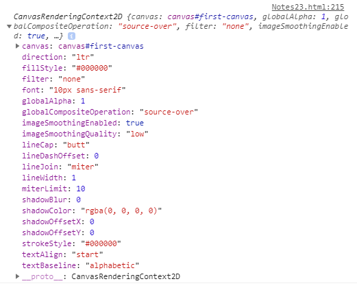So, let's start by drawing a simple rectangle, to do so we will need to use the fillRect(x, y, width, height) method, like in the example below:
HTML Code:
<canvas id="second-canvas" class="canvas"></canvas>
CSS Code:
.canvas{ display: block; margin: 20px auto 20px auto; width: 500px; height: 200px; border: 2px solid black; background-color: white; }
JavaScript Code:
let canvas = document.querySelector('#second-canvas'); let c = canvas.getContext('2d'); c.fillRect(100, 20, 100, 100);
Outcome:
So, the y is the top of the rectangle and not the bottom as you may expected, imagine the rectangle was a paper, put your finger on the top left corner of the rectangle and move it 100 px to the right and 20px down, that's what we basically did.
So, how do you color those rectangles? If you take a look at CanvasRenderingContext2D object in the picture above, there is a property called fillStyle, by default it's set to #000000, which is black, when using a method such as fillRect(), the shape looks at fillStyle property and colors the shape based on the value of the property, so to color your rectangles simple change the value of this property to the wanted color, like in the example below:
JavaScript Code:
let canvas = document.querySelector('#third-canvas'); let c = canvas.getContext('2d'); c.fillStyle = "red"; c.fillRect(20, 20, 50, 50); c.fillStyle = "green"; c.fillRect(200, 20, 50, 50); c.fillStyle = "blue"; c.fillRect(100, 80, 50, 50);
Outcome:
How do we style the stroke of those rectangles now? Just like fillStyle, if you take a look in the CanvasRenderingContext2D there is a property called strokeStyle which by default is set to black, the value of this property is used to set the color of the stroke, however, the rectangles above don't have a stroke, so how do we add them one? You could use strokeRect to create a rectangle with only stroke and then position it where your rectangle is.
JavaScript Code:
let canvas = document.querySelector('#fourth-canvas'); let c = canvas.getContext('2d'); c.strokeStyle = "red"; c.fillRect(20, 20, 50, 50); c.strokeRect(20, 20, 50, 50); c.fillRect(200, 20, 50, 50); c.strokeRect(200, 20, 50, 50); c.fillRect(100, 80, 50, 50); c.strokeRect(100, 80, 50, 50);
Outcome:
Alright, great, but how do you change the width of the stroke? You can do so with the lineWidth property, just like fillStyle and stokeStyle, this property can be found inside the CanvasRenderingContext2D and by default it's value is 1.
JavaScript Code:
let canvas = document.querySelector('#fifth-canvas'); let c = canvas.getContext('2d'); c.strokeStyle = "red"; c.lineWidth = "10"; c.fillRect(100, 20, 100, 100); c.strokeRect(100, 20, 100, 100);
Outcome:
So now, what if you wanted to create many rectangles and wanted to have a stroke for all of them? Would you need to make all rectangles and strokes differently? That would take a lot of space and time, so you could instead create a function that creates rectangles with stroke without needing to place the stroke and rectangle differently:
JavaScript Code:
let canvas = document.querySelector('#sixth-canvas'); let c = canvas.getContext('2d'); function createRect(x, y, w, h, fs, ss, lw){ c.fillStyle = fs; c.strokeStyle = ss; c.lineWidth = lw; c.fillRect(x, y, w, h); c.strokeRect(x, y, w, h); } createRect(20, 40, 50, 50); createRect(100, 20, 50, 50, 'yellow', undefined,5); createRect(180, 40, 50, 50, 'blue', 'red', 3);
Outcome:
Before I finish with this section, I want to also talk about clearRect(x, y, w, h) method, which clears a specified rectangular area, making it fully transparent, like this:
JavaScript Code:
let canvas = document.querySelector('#eighth-canvas'); let c = canvas.getContext('2d'); c.fillRect(20, 20, 100, 100); c.clearRect(40, 40, 60, 60);
Outcome:
So what did we learn in this section? Here is a list of all the properties and methods we went over, as well as a quick description of what each does:
Alright, so we now know how to make rectangles, we are not going to make minecraft though, so we need something more than just rectangles. Let's talk about paths now, they are pretty similar to SVG paths, what exactly is a path though?
You can think of a path as a set of instructions used to move a virtual pen around to form lines and curves, in this section, I will go over some basic path commands, I will get in more details about curves, arcs and more in later sections.
To begin a path you shoud use the beginPath() method, after that to start drawing your path you can use moveTo(x, y) to pick up your virtual pen and move it around, without drawing, and then you can use lineTo(x, y) to create a line from the position your virtual pen was moved to, to the specified coordinates, lastly, you can use the closePath() method to create a line back to the start of the path and close the shape. This by it self will not have any visible effect on the canvas however, and that's because the path still has no stroke or fill, you can add a stroke using the stroke() method, and you can add a fill using the fill() method.
JavaScript Code:
let canvas = document.querySelector('#seventh-canvas'); let c = canvas.getContext('2d'); c.beginPath(); c.moveTo(10, 10); c.lineTo(100, 10); c.lineTo(100, 100); c.closePath(); c.strokeStyle = 'red'; c.lineWidth = 3; c.stroke(); c.fillStyle = 'yellow'; c.fill();
Outcome:
So what did we lern in this section? Here is a list of all the methods we went over, as well as a quick description of what each does:
Here is a really cool video that explains the methods I just talked about in only two minute:
The next type of paths I want to talk about are Bezier curves, there are actually 2 methods I want to talk about, and these are quadraticCurveTo(cp1x, cp1y, x, y) and bezierCurveTo(cp1x, cp1y, cp2x, cp2y, x, y) methods.
The difference between these two can best be described using the following image:
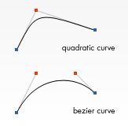As you can see, to draw curves you are using control points, bezier curves use two control points while quadratic curves only use one control point.
Here is a quadratic curve for example, I have set a background and drew the control point too so that it is easier to see what exactly happens with the code, in order to get confortable with using control points you should play around with it:
JavaScript Code:
let canvas = document.querySelector('#canvas-one'); let c = canvas.getContext('2d'); c.beginPath(); c.strokeStyle = "black"; c.moveTo(80, 60); c.quadraticCurveTo(120, 100, 160, 60) c.lineWidth = 3; c.stroke();
Outcome:
Now let's try to create a bezier curve, which uses two control points:
JavaScript Code:
let canvas = document.querySelector('#canvas-2'); let c = canvas.getContext('2d'); c.beginPath(); c.moveTo(70, 80); c.bezierCurveTo(90, 30, 150, 120, 180, 80); c.lineWidth = 2; c.strokeStyle="black"; c.stroke();
Outcome:
Here is a helpful video that explains curves pretty well:
Let's now learn about Arcs, to create arcs you should use the arc(x, y, r, sAngle, eAngle, counterclockwise) method, as you can see it has quite a few parameters it can take, but I'm gonna explain what each does as well as I can.
The x and y should be used to place the arc on the canvas, the r is the radius of the arc, the sAngle and eAngle parameters take radians and define the starting angle and ending angle of the arc and lastly the counterclockwise is optional and takes a boolean value, by default it is fault which means the arc is drawn clockwise, if changed to ture the it is drawn counter-clockwise.
In order to easier be able to work with arcs, we will convert degrees to radians by doing degrees * Math.PI / 180, here is an example:
JavaScript Code:
let canvas = document.querySelector('#canvas-3'); let c = canvas.getContext('2d'); let Sangle = 90 * Math.PI / 180; let Eangle = 180 * Math.PI / 180; c.fillStyle = "green" c.strokeStyle = "black"; c.beginPath(); c.arc(70, 90, 30, Sangle, Eangle, false); c.lineTo(70, 90); c.closePath(); c.stroke(); c.fill(); Sangle = -90 * Math.PI / 180; Eangle = 180 * Math.PI / 180; c.beginPath(); c.arc(155, 90, 30, Sangle, Eangle, false); c.lineTo(155, 90); c.closePath(); c.stroke(); c.fill(); Sangle = 90 * Math.PI / 180; Eangle = 180 * Math.PI / 180; c.beginPath(); c.arc(240, 90, 30, Sangle, Eangle, true); c.lineTo(240, 90); c.closePath(); c.stroke(); c.fill();
Outcome:
I have done some extra decoration so tht it's easier to understand what's happening, so, let's look at the
first arc, it is drawn clockwise, the arcs
are drawn from the x axis of the right side of the circle, since it's end angle is
180 the arc was drawn all the way to the
The second arc is the same, except that the star degree is -90 instead of 90. Lastly, the third arc is drawn counter-clockwise, it's end degree is 180 which is why the top half of the arc is drawn and the start degree is 90, the start degree is formed clockwise no matter what, so that's why the 1/4 of the right down side of the circle is drawn.
Alright, so arc() method is pretty cool when you want to make circles and stuff, let's now talk about arcTo(x1, y1, x2, y2, r) method which is kind like curves.
JavaScript Code:
let canvas = document.querySelector('#canvas-4'); let c = canvas.getContext('2d'); c.beginPath(); c.strokeStyle = "black"; c.lineWidth = "2"; c.moveTo(100, 90); c.arcTo(155, 50, 200, 90, 40); c.stroke();
Outcome:
So, I did some extra decoration as you can see to help you understand what kind of happens behind the scenes in order to form the arc, this is a little complicated the truth is, however, I have just the perfect video right here to help you understand how this method works:
Let's now learn how to draw text on the canvas, the most important methods you need to know are the following: font, fillText(text, x, y) and strokeText(text, x, y).
JavaScript Code:
let canvas = document.querySelector('#canvas-5'); let c = canvas.getContext('2d'); // type, size, font-family // type: norma, italic, bold c.font = "normal 24px Arial"; c.fillStyle = "blue"; c.fillText("Hello World!", 80, 60); c.strokeText("Hello World!", 80, 60);
Outcome:
Let's learn some more methods now, to align text you will need to use textAlign and textBaseline properties:
Let's first learn the different textAlign values you can use to align text horizontally:
JavaScript Code:
let canvas = document.querySelector('#canvas-6'); let c = canvas.getContext('2d'); c.fillStyle = "black"; c.font = "normal 15px Arial"; c.textAlign = "start"; c.fillText('textAlign=start', 140, 40); c.textAlign = "end"; c.fillText('textAlign=end', 140, 60); c.textAlign = "left"; c.fillText('textAlign=left', 140, 80); c.textAlign = "center"; c.fillText('textAlign=center', 140, 100); c.textAlign = "right"; c.fillText('textAlign=right', 140, 120);
Outcome:
Now let's learn the different textBaseline values you can use to align text vertically.
JavaScript Code:
let canvas = document.querySelector('#canvas-7'); let c = canvas.getContext('2d'); c.fillStyle = "black"; c.font = "normal 15px Arial"; c.textAlign = "start"; c.textBaseline = "top"; c.fillText('Top', 30, 70); c.textBaseline = "bottom"; c.fillText('Bottom', 60, 70); c.textBaseline = "middle"; c.fillText('Middle', 110, 70); c.textBaseline = "alphabetic"; c.fillText('Alphabetic', 157, 70); c.textBaseline = "hanging"; c.fillText('Hanging', 230, 70);
Outcome:
Next let's talk about direction property, this one is still experimental, and is not supported by Firefox and Internet Explorer, this property allows us to specify the direction to draw the text.
JavaScript Code:
let canvas = document.querySelector('#canvas-8'); let c = canvas.getContext('2d'); c.fillStyle = "black"; c.font = "normal 15px Arial"; c.direction = "ltr"; c.fillText("left to right!", 100, 40); c.direction = "rtl"; c.fillText("right to left!", 100, 60); c.direction = "inherit"; c.fillText("inherit from canvas!", 100, 80)
Outcome:
Lastly, let's talk about how we can measure the text to get it's width or height using measureText(text) method:
JavaScript Code:
let canvas = document.querySelector('#canvas-9'); let c = canvas.getContext('2d'); let txt = "Hello World" console.log(c.measureText(txt)); c.font = "normal 30px Arial"; c.fillStyle = "red"; c.fillText(txt, 90, 90) console.log(c.measureText(txt));
Outcome:
Here are the logs, as you can see, the width changed after I set the font:
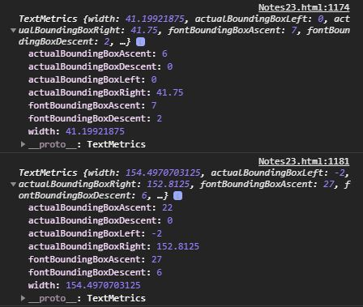Let's now make a little project for practice:
HTML Code:
<canvas id="canvas-10" class="canvas"></canvas> <p style=" width: 500px; text-align: left; margin: auto; "> <input type="text" id="inputc" value="Insert text"> </p>
JavaScript Code:
let canvas = document.querySelector('#canvas-10'); let c = canvas.getContext('2d'); let input = document.querySelector('#inputc'); let txt = "Insert text"; c.font = "normal 15px Arial"; c.fillStyle = "black"; c.fillText(txt, 20, 50); let width = c.measureText(txt).width; let txt2 = `Text Width: ${width}px` c.fillText(txt2, 20, 100); let width2 = c.measureText(txt2).width; input.addEventListener('input', (e) => { c.clearRect(20, 37, width, 18); c.clearRect(20, 87, width2, 18); txt = input.value; width = c.measureText(txt).width; c.fillText(txt, 20, 50); txt2 = `Text Width: ${width}px` c.fillText(txt2, 20, 100); width2 = c.measureText(txt2).width; });
Outcome:
Here is a video that helped me a lot, watch it if you want and subscribe to the guy, his tutorials have helped me countless of times:
The createLinearGradient() method creates a linear gradient object. This gradient can later be used to fillStyle and strokeStyle properties.
The createLinearGradient(x0, y0, x1, y1) method takes four parameters, which define the start point and end point of the gradient, inside the gradient object that is returned by the createLinearGradient() method there is a method:
JavaScript Code:
let canvas = document.querySelector('#canvas-01'); let c = canvas.getContext("2d"); let gradient = c.createLinearGradient(10, 10, 10, 190); console.log(gradient);
Outcome:
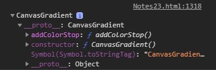To add colors to the linear gradient you will need to use the addColoStop() methods which takes two parameters, the first parameter defines the position and the second parameter the color. The first parameter should take a value between 0 and 1, where 0.5 represents 50% and 1 represents 100%:
JavaScript Code:
let canvas = document.getElementById("canvas-02"); let c = canvas.getContext('2d'); let gradient = c.createLinearGradient(50,50,50,100); gradient.addColorStop(0, 'red') gradient.addColorStop(0.5, 'blue'); gradient.addColorStop(1, 'green'); c.fillStyle = gradient; c.fillRect(50, 50, 100, 50);
Outcome:
The createLinearGradient() creates the direction and size of the gradient, if we were to change the end point to 150, 100 then the direction of the gradient would be from the top left of the rectangle towards the bottom right side of the rectangle:
JavaScript Code:
let canvas = document.getElementById("canvas-03"); let c = canvas.getContext('2d'); let gradient = c.createLinearGradient(50,50,150,100); gradient.addColorStop(0, 'red') gradient.addColorStop(0.33, 'red'); gradient.addColorStop(0.34, 'blue'); gradient.addColorStop(0.70, 'blue'); gradient.addColorStop(0.701, 'green'); gradient.addColorStop(1, 'green'); c.fillStyle = gradient; c.fillRect(50, 50, 100, 50);
Outcome:
So, using CSS we can set the width and height of the viewport, and using width and height attributes, either by hand either through JavaScript we can define the pixels inside the viewport. In this section we will learn more ways to customize the canvas grid. With transformations you can translate the 0, 0 point to a different position, rotate the grid and even scale it.
The first of the transformation methods we will look at is translate(). This method is used to move the canvas and it's origin to a different point in the grid.
The translate(x, y) methods moves the canvas and it's origin on the grid. The first parameter indicates the horizontal distance to move, and the second parameter indicates how far to move the grid vertically.
JavaScript Code:
let canvas = document.querySelector('#canvas-05'); let c = canvas.getContext('2d'); background(c); c.translate(100, 100); c.fillStyle = "red"; c.beginPath(); c.arc(0, 0, 3, 0, 2 * Math.PI, false); c.moveTo(20, 20); c.arc(20, 20, 3, 0, 2 * Math.PI, false); c.stroke(); c.fill()
Outcome:
The second transformation method I wanna talk about is rotate(). We use it to rotate the canvas around the current origin.
The rotate(angle) method rotates the canvas clockwise around the current origin by the angle number of radians.

The rotation center point is always the canvas origin. To change the center point, we will need to move the canvas by using the translate() method.
JavaScript Code:
let canvas = document.getElementById("canvas-06"); let c = canvas.getContext('2d'); c.translate(0, 0); background(c); c.fillStyle = 'red'; c.font = 'normal 15px Arial'; c.translate(100, 50); c.rotate(135 * Math.PI / 180); c.fillText('Hello World!', 0, 0); c.fillRect(0, 10, 85, 5);
Outcome:
The next transformation method is scaling. We use this to increase or decrease the units in our canvas grid. This can be used to draw scaled down or enlarged shapes and bitmaps.
The scale(x, y) method scales the canvas units by x horizontally and by y vertically. Both parameters are real numbers. Values that are smaller than 1.0 will reduce the unit size and values above 1.0 will increase the unit size. Values of 1.0 will leave the units the same size.
Using negative numbers will flip the shape and do axis mirroring, here are some example:
JavaScript Code:
let canvas = document.getElementById('canvas-07'); let c = canvas.getContext('2d'); background(c); c.save(); c.scale(2, 2); c.fillRect(10, 10, 25, 25); c.restore(); c.font = 'normal 20px Arial'; c.fillStyle = 'black'; c.save(); c.translate(200, 50); c.scale(-1, 1); c.fillText('Hello World!', 0, 0); c.restore(); c.save(); c.translate(200, 100); c.scale(-1, 1); c.fillText('Hello People!', 0, 0) c.restore();
Outcome:
So, you are probably wondering now what does save() and restore() do, and that's what I'm gonna talk about next.
Canvas states are stored on a stack. Every time the save() method is called, the current drawing state is pushed onto the stack. A drawing state consists of:
I still haven't talked about some of the stuff listed in the list, I will try and write about these later on my notes.
You can call the save() method as many times as you like, Each time the restore() method is called, the last saved state is popped off the stack and all saved settings are restored.
In this section I want to talk some more about strokes, there are a few properties out there that can be used to decorate strokes, here is a list of all the properties I will explain in the section:
So, I have already told about lineWidth and lineStyle before, and there really isn't much about them anyway, couldn't be any simplier, so let's skip those two and get started with the lineCap property first, lets take a loo kat the different kind of line cap styles we can use:
JavaScript Code:
let canvas = document.querySelector('#canvas-08'); let c = canvas.getContext('2d'); background(c); c.lineWidth = 10; c.strokeStyle = 'red'; c.lineCap = 'butt'; c.beginPath(); c.moveTo(50, 120); c.lineTo(50, 30); c.stroke(); c.lineCap = 'round'; c.beginPath(); c.moveTo(120, 120); c.lineTo(120, 30); c.stroke(); c.lineCap = 'square'; c.beginPath(); c.moveTo(190, 120); c.lineTo(190, 30); c.stroke();
Outcome:
The reason I had to create different paths is because only one style can be applied to the final shape made by the path, I could not create the three lines in one path and change the lineCap property for each, because only the final value I wrote would be used for the path.
Let's now check lineJoin property and the different types that can be used:
JavaScript Code:
let canvas = document.querySelector('#canvas-09'); let c = canvas.getContext('2d'); background(c); c.lineWidth = 10; c.strokeStyle = 'red'; c.lineJoin = 'bevel'; c.beginPath(); c.moveTo(40, 120); c.lineTo(80, 120); c.lineTo(80, 30); c.lineTo(60, 50); c.stroke(); c.lineJoin = 'round'; c.beginPath(); c.moveTo(120, 120); c.lineTo(160, 120); c.lineTo(160, 30); c.lineTo(140, 50); c.stroke(); c.lineJoin = 'miter'; c.beginPath(); c.moveTo(200, 120); c.lineTo(240, 120); c.lineTo(240, 30); c.lineTo(220, 50); c.stroke();
Outcome:
Since we just learned about the miter value of lineJoin, lets now talk about the miterLimit property.
The miterLimit property sets or returns the maximum miter length. The miter length is the distance between the inner corner and the outer corner where two lines meet.

The miterLimit property works only if the lineJoin property is miter. The miter length grows bigger as the angle of the corner gets smaller.
To prevent the miter length from being too long, we can use the miterLimit property.
If the miter length exceeds the miter limit value, the corner will be displayed as lineJoin type 'bevel'.
JavaScript Code:
let canvas = document.querySelector('#canvas-idk'); let c = canvas.getContext('2d'); background(c); function draw(x, y, y2){ c.beginPath(); c.moveTo(x, y); c.lineTo(x + 40, y); c.lineTo(x, y2); c.stroke(); } c.lineWidth = 10; c.lineJoin = 'miter'; c.miterLimit = Number.POSITIVE_INFINITY; c.strokeStyle = 'green'; draw(40, 80, 30); draw(120, 80, 65); draw(200, 80, 120); c.miterLimit = 5; c.strokeStyle = 'red'; draw(40, 80, 30); draw(120, 80, 65); draw(200, 80, 120); c.lineJoin = 'bevel'; c.strokeStyle = 'blue'; draw(40, 80, 30); draw(120, 80, 65); draw(200, 80, 120);
Outcome:
So, in the example above, you can see how when miterLimit is set to 5, the middle lines use bever type to connect, because the miter length extends 5 pixels, while the others which don't are drawn without a problem.
Now, let's try setLineDash() method and lineDashOffSet property:
JavaScript Code:
let canvas = document.querySelector('#canvas-010'); let c = canvas.getContext('2d'); background(c); c.lineWidth = 10; c.strokeStyle = 'red'; c.lineCap = 'butt'; c.setLineDash([20, 5, 10, 5]); c.beginPath(); c.moveTo(40, 40); c.lineTo(200, 40); c.stroke(); c.setLineDash([20, 5, 20]); c.beginPath(); c.moveTo(40, 80); c.lineTo(200, 80); c.stroke(); c.setLineDash([20, 5, 20]); c.lineDashOffset = 25; c.beginPath(); c.moveTo(40, 120); c.lineTo(200, 120); c.stroke();
Outcome:
So, I need you to understand what happens with the dash pattern, the pattern goes like this: line, gap, line, etc, when it reads the array, the array values are used on this pattern, when the array values are over, it reads the array again from the start. If the array values are an even number, then everything works as expected, if however it's a an odd number, then after the array values end, when it starts reading from the start of the array the first value will be used to create a gap, and the second to create the line, and so on, till it reaches the end again, then it will get back to normal for the next run.
The lineDashOffset is used to move the stroke, this can create great effects when used for animations, here is an example:
JavaScript Code:
let canvas = document.querySelector('#canvas-011'); let c = canvas.getContext('2d'); background(c); c.lineWidth = 5; c.strokeStyle = 'red'; c.lineDashOffset = 0; function draw(){ c.clearRect(0, 0, canvas.width, canvas.height); c.beginPath(); c.moveTo(50, 50); c.lineTo(200, 50); c.lineTo(200, 120); c.lineTo(50, 120); c.closePath(); c.stroke(); } function march(){ c.setLineDash([2,2]); c.lineDashOffset++; draw(); } setInterval(march, 20);
Outcome:
The globalAlpha property sets or returns the current transparency value of the drawing.
The globalAlpha property value must be a number between 0.0 (fully transparent) and 1.0 (no transparancy).
JavaScript Code:
let canvas = document.getElementById('canvas-012'); let c = canvas.getContext('2d'); background(c); c.fillStyle = 'red'; c.globalAlpha = 0.8; c.fillRect(50, 50, 50, 50); c.globalAlpha = 0.5; c.fillRect(135, 50, 50, 50); c.globalAlpha = 1; c.fillRect(220, 50, 50, 50);
Outcome:
Until now we have created our own shapes and applied styles to them. One of the more exciting feautures of canvas is the ability to use images. External images can be used in any format supported by the browser, such as PNG, GIF, or SJPEG. You can even use the image produced by other canvas elements on the same page as the source.
Importing images into a canvas is basically a two step process:
The canvas API is able to use any of the following data types as an image source:
There are several ways to get images for use on a canvas.
We can obtain a reference to images on the same page as the canvas by using one of the following methods:
I have already talked about getElementsByTagName() and getElementsById() methods before in my notes, I have never mentioned images property however, this property of the Document object returns a collection ot the images in the current HTML document. Let's try this:
JavaScript Code:
console.dir(document.images);
Outcome:
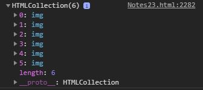Those image objects contain a lot of properties inside them, so you could use an array method such as filter to only get a specific image, if for example you want to check for their name you could use a regular expression and select it from the outerHTML property which contains a string of the outer HTML of the image.
Using the crossorigin attribute of an <img> element (reflected by the HTMLImageElement.crossOrigin property), you can request permission to load an image from another domain for use in your call to drawImage(). If the hosting domain permits cross-domain access to the image, the image can be used in your canvas without tainting it, otherwise using the image will taint the canvas.
I have talked about the crossorigin attribute here, if you want to learn the different values you can use for this attribute check this out.
Just as with normal images, we can access other canvas elements using either document.getElementsByTagName() or document.getElementById() method. Be sure you've drawn something to the source canvas before using it in your target canvas.
One of the more practical uses of this would be to use a second canvas element as a thumbnail view of the other larger canvas.
Another option is to create a new HTMLImageElement object in our script. To do this, you can use the convenient Image() constructor:
JavaScript Code:
let img = new Image(); img.src = ../images/example.png'; console.log(img); console.dir(img);
Outcome:

When this script gets executed, the image starts loading.
If you try to call drawImage() before the image has finished loading, it won't do anything (or in older browsers, may even throw an exception). So you need to be sure to use the load event so you don't try this before the image has loaded.
JavaScript Code:
var img = new Image(); img.src = ../images/example.png'; img.addEventListener('load', function(e){ // execute drawImage statements here });
This should work fine when working with only one image, what if you are using multiple images though? How do you make sure all of them have loaded? One simple way would be to add all your images directly into your HTML code using <image> tag, you could put all of them inside a div and then hide it with CSS, after you do so you could simple use window.addEventListener('load', function(){}).
If you however want to create the images with JavaScript, a code like this should do the job:
JavaScript Code:
let imgToLoad = 3, imgLoaded = 0; function onImgLoad(){ imgLoaded++; if(imgLoaded == imgToLoad){ //execute draw image statements here } } img1 = new Image(); img1.src = ../images/example.png'; img2 = new Image(); img2.src = ../images/example2.png'; img3 = new Image(); img3.src = ../images/example3.png'; let arr = [img1, img2, img3]; arr.forEach((img) => { img.addEventListener('load', onImgLoad); });
Outcome:
Once we have a reference to our source image object we can use the drawImage() method to render it to the canvas. As we will see later the drawImage() ethod is overloaded and has several variants. In it's most basic form it looks like this: drawImage(image, x, y) but it can take up to nine parameters, and the way the parameters work change depending on how many are used, we will go over all that here in this section.
Let's try to draw our first image now, using those three first parameters only:
JavaScript Code:
let img = new Image(); img.src = ../images/example.png'; let canvas = document.getElementById('canvas-013'); let c = canvas.getContext('2d'); img.addEventListener('load', (e) => { canvas.width = '600'; canvas.height = '200'; c.drawImage(img, 0, -115); });
Outcome:
The image was too big so I had to change the size of the canvas in order to fit it inside, wouldn't that be great if we could scale it?, well, we can! The two next parameters do just that:
JavaScript Code:
let img = new Image(); img.src = ../images/phoenix.png'; let canvas = document.getElementById('canvas-014'); let c = canvas.getContext('2d'); img.addEventListener('load', (e) => { c.drawImage(img, 40, 30, 200, 100); background(c); });
Outcome:
So, now, if we add the next four parameters the drawImage() method will work different than expected, we would normally expect that those four new parameters would be the last four parameters, but they are not, if more than five parameters are added, then the order of the parameters changes a little, so, till now it was like this: (source, xPosition, yPosition, xScale, yScale), if more parameters are added then it changes to be like this: (source, xSlice, ySlice, xSliceScale, ySliceScale, positionX, positionY, scaleX, scaleY).
So, the first parameter and last four parameters are the same as before, but between them there are four new parameters added, those new parameters allow us to slice the image, so that we only use a part of the image inside of using the whole image, here is an example:
Let's use this image and use a loop to place grass tiles all over the canvas:
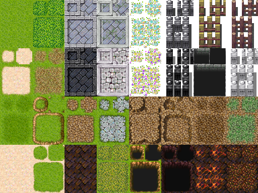JavaScript Code:
let image = document.getElementById('imageAA'); let canvas = document.getElementById('canvas-015'); let c = canvas.getContext('2d'); image.addEventListener('load', (e) => { for(i = 0; i <= 12; i++){ for(j = 0; j <= 6; j++){ c.drawImage(image, 80, 40, 40, 50, i * 25, j * 25, 25, 25); } } });
Outcome:
Here is a video that may help you undersand imageDraw() method better:
Before I finish with this section I want to also talk about one more property, the imageSmoothingEnabled = boolean property, whic is used to control the use of image smoothing algorithms when scaling images. By default, it is true, meaning images will be smoothed when scaled. You can disable this future by setting the property to false:
JavaScript Code:
let canvas = document.getElementById('canvas-016'); let c = canvas.getContext('2d'); let img = new Image(); img.src = ../images/phoenix.png'; background(c); img.addEventListener('load', (e) => { c.drawImage(img, 20, 40, 120, 80); c.imageSmoothingEnabled = false; c.drawImage(img, 160, 40, 120, 80); });
Outcome:
Let's now learn how to resize images but keep the original aspect ratio, something useful if you want your images to have good quality. First, in order to find the aspect ratio we are gonna do img.naturalWidth / img.naturalHeight, after we have the ratio we can choose a width for our image and in order to find what the height should we we simple do width / aspect ratio, what if we want to choose a height and find what the width should be? By using a little bit of algebra, we can assume that width = height * ratio, lets try this on our canvas to see if that's true.
By the way, you may wonder what naturalWidth and naturalHeight are and how they are different to width, height, clientWidth and clientHeight, the width and height give us the value of the width and height attribute, the clientWidth and clientHeight give us the width and height of the element, if for example we had changed it's size using CSS then this would give us the exact width and height it takes on the page, while lastly, naturalWidth and naturalHeight give us the original width and height of the image.JavaScript Code:
let canvas = document.getElementById('canvas-0001'); let c = canvas.getContext('2d'); let img = new Image(); img.src = ../images/phoenix.png'; background(c); c.imageSmoothingEnabled = true; img.addEventListener('load', (e) => { let aspectRatio = img.naturalWidth / img.naturalHeight; c.drawImage(img, 0, 0, 120, 120 / aspectRatio); c.drawImage(img, 120, 0, 100 * aspectRatio, 100) });
Outcome:
In this section I'm gonna talk about ways you can animate the canvas, there isn't really much to say, since we are gonna use simple JavaScript code to get the wanted result, there is however one method I want to talk about, the Window.requestAnimationFrame() method.
The window.requestAnimationFrame() method tells the browser that you wish to perform an animation and requests that the browser calls a specified function to update an animation before the next repaint. The method takes a callback as an argument to be invoked before the repaint.
Your callack routine must it self call requestAnimationFrame() again if you want to animate another frame at the next repaint. requestAnimationFrmae() is 1 shot.
So, why use the requestAnimationFrame() method if we can just use setInterval? That's because requestAnimationFrame produces higher quality animation completely eliminating flicker and shear that can happen when using setInterval, and it also reduce or completely remove frame skips.
Here is a simple example of requestAnimationFrame() method so that you can see it's syntax:
JavaScript Code:
let container = document.getElementById('ctainer'); let i = 0; function example(){ i++ if(i <= 3){ container.innerHTML += 'Hello World!'; requestAnimationFrame(example); } else { return false; } } example();
Outcome:
Let's create an animation on the canvas now:
JavaScript Code:
let canvas = document.getElementById('canvas-017'); let c = canvas.getContext('2d'); c.fillStyle = 'black'; c.strokeStyle = 'blue'; let circle = function(x, y, r, dx, dy){ this.x = x; this.y = y; this.r = r; this.dx = dx; this.dy = dy; this.draw = function draw(){ c.beginPath(); c.arc(this.x, this.y, this.r, 0, 2 * Math.PI); c.stroke(); c.fill(); } this.animate = function animate(){ if(this.x > canvas.width - r || this.x - this.r < 0){ this.dx = -this.dx; } if(this.y > canvas.height - r || this.y - this.r < 0){ this.dy = -this.dy; } this.x += this.dx; this.y += this.dy; this.draw(); } } let array = new Array(); for(let i = 1; i <= 100; i++){ let r = 10; let x = Math.random() * (canvas.width - r * 2) + r; let y = Math.random() * (canvas.height - r * 2) + r; let dx = (Math.random() - 0.5) * 2; let dy = (Math.random() - 0.5) * 2; array.push(new circle(x, y, r, dx, dy)); } let animation = function(){ c.clearRect(0, 0, canvas.width, canvas.height); array.forEach((circle) => { circle.animate(); }) requestAnimationFrame(animation); } animation();
Outcome:
So, at first this may seem a little complicated, but it's more easy once you understand it, I created a object constructor which has five properties inside, the first two are used to set the x and y coordinates, the third property sets the radius and the last two set the speed of x and y, those will be added to the current x and y per every iteration, then I created a draw method, which simple draws the circle on the canvas and then I created an animate method which checks some conditions and updates x and y coordinates, then it draws the circles by executing the draw method using the new coordinates. If the x reaches the edge of the canvas I make it change direction, and when it reaches the starting edge I make it change direction again, same goes for y.
Alright, so far I have explained what the methods do, now let me explain what I did next, I used that constructor to create 100 different circle objects inside an array, then I created a function that is executed again and again by requestAnimationFrame() method, this function in every single iteration clears the canvas and then goes through every object in the array, and calls the animate() method, which checks the current x and y coordinates, and then updates them and draws the circles using them, each circle object has different coordinates and speed, and that was achieved using Math.random() when we created them before.
The x parameter is randomly generated by Math.random() * (canvas.width - r * 2) + r, why is that? That's because Math.random() returns a number between 0 and 1, if I multiply it by the canvas width then the x can be anywhere between 0 and the edge of the canvas, but since the circle has a radius, I want to make sure that no circle can spawn through the edges for both left and right sides, that's why I did canvas.height - r *2, which makes sure the circle will be able to only spawn between 0 and on a distance equal to it's full width before the right edge, then to make sure it will not spawn in the left edge we add r, that's also the reason the distance from the right side we specified before was multiplied by 2, because now, no matter where the circle spawns, it will not be inside the edges. A similar way was used to generate the y coordinate.
About the dx and dy values now, I did Math.random() - 0.5 so that there is a 50% chance to return a negative number, then I multiplied by 2 in order to make it move faster.
Here is a video that helped me a lot, it goes through the process of creating the project I made above, slower, and explains things very much clearer than I did:
Let's now try to create something more cool using event listeners, there isn't really much to say about event listeners, because I have already talked about them in previous pages, here is a nice project I created:
JavaScript Code:
window.addEventListener('load', (e) => { var canvas = document.querySelector('#canvas-project1'); var c = canvas.getContext('2d'); canvas.width = 500; canvas.height = 300; var points = new Array(); // function to be used for all touch events function getTouchOffset(e){ points = []; let canvas_box = canvas.getBoundingClientRect(); let coords = { x: canvas_box.left, y: canvas_box.top } Array.from(e.touches).forEach((touch) =>{ points.push({x: touch.clientX - coords.x, y: touch.clientY - coords.y}); }); } // touch events that update x and y points canvas.addEventListener('touchstart', (e) =>{ getTouchOffset(e); }); canvas.addEventListener('touchmove', (e) =>{ getTouchOffset(e); }); canvas.addEventListener('touchend', (e) =>{ getTouchOffset(e); }); // mouse events that update x and y points canvas.addEventListener('mousemove', (e) =>{ points = []; points.push({ x: e.offsetX, y: e.offsetY }); }); canvas.addEventListener('mouseout', (e) =>{ points = [{ x: Number.POSITIVE_INFINITY, y: Number.POSITIVE_INFINITY }] }); // constructor that creates circles var circleMaker = function(x,y,r,dx,dy,cl){ this.x = x; this.y = y; this.r = r; this.r2 = r; this.dx = dx; this.dy = dy; this.randomColor = cl; this.draw = function(){ c.fillStyle = this.randomColor; c.beginPath() c.arc(this.x, this.y, this.r, 0, 2 * Math.PI); c.stroke(); c.fill(); } this.update = function(){ let range = 30; let arr; // checks if any of the (x, y) coordinates inside the points array are inside the wanted range of the circle, // the reason I am using an array for the points is so that multi-touches are supported for touchscreens arr = points.filter((point) => { if(point.x - this.x < range && point.x - this.x > -range){ if(point.y - this.y < range && point.y - this.y > -range){ return true; } } }); // if the filter method above returned at least one item then it // increases the radius, else it decreases it if(arr.length == 0){ if(this.r > this.r2){ this.r -= 1; } } else{ if(this.r < 30){ this.r += 5; } } // checks if the circle has met or passed the edges of the canvas, // if it has passed the right edge then I make sure dx is converted to a negative number else if it // is less than 0 I make sure it is a positive number, I didn't do it like in the tutorial because // problems would occur while scaling the circles, since if it was scaled and surpassed the edge then // it would get stuck, that would happen because with the code in the video it would multiple dx with - every time // x was higher than the width of the canvas, if x was heigher than 100 pixels from the edge for example // (something that could happen due to fast scaling while near the edge) then dx would become -dx and would increase // like 4 pixels for example but would still be higher than the width of the canvas so it would change back to dx and // that would go on forever causing it get stuck there. if(this.x - this.r < 0){ this.dx = Math.abs(this.dx); } else if(this.x + this.r > canvas.width){ this.dx = (this.dx < 0)? this.dx: -this.dx; } if(this.y - this.r < 0){ this.dy = Math.abs(this.dy); } else if(this.y + this.r > canvas.height){ this.dy = (this.dy < 0)? this.dy: -this.dy; } // updates x and y of the circle and then executes the draw method this.x += this.dx; this.y += this.dy; this.draw(); } } var circles = new Array(); var clrs = ["#F2EBEC", "#C8C1D9", "#5D84A6", "#485159", "#F2D4AE"]; // loop that creates circles using the constructor made earlier for(let i = 1; i <= 400; i++){ let r = Math.random() * 3 + 1; let x = Math.random() * (canvas.width - r * 2) + r; let y = Math.random() * (canvas.height - r * 2) + r; let dx = (Math.random() - 0.5) * 3; let dy = (Math.random() - 0.5) * 3; let cl = clrs[Math.floor(Math.random() * clrs.length)]; circles.push(new circleMaker(x, y, r, dx, dy, cl)); } // function that executes again and again to animate the canvas function animate(){ c.clearRect(0,0,canvas.width,canvas.height); circles.forEach((circle) => { circle.update(); }); requestAnimationFrame(animate); } animate(); });
Outcome:
Let me explain a little now, you already can see from the comments what each part of the code basically does, but I will try to give a more organized explanation about what happens behind the scenes here. First of all, the circles moving around were made just like the ones I created in the previous section, I explained the code there so I will not go into much details about this, I changed some stuff however, I made the radius of the circles be defined randomly, by writing Math.random() * 3 + 1, this makes so the radius of the circles is between 1 and 4 pixels. I also made a new property called color, and made it pick a random color for each circle, it chooses a color from an array of colors randomly something I did by writing Math.floor(Math.random() * clrs.length), Math.floor will take the result, and if it's a float number such as 0.5 it will return 0, or if the number is 0.7 it will also return 0, if it's 1.6 it will return 1, if it's 2.3 it will return 2, and so on.
So, every time you hover your mouse over the canvas or touch the canvas an object with the current x and y positions is added to an array called points, the reason I want it to be an array is because for touches multiple objects could be returned if multi-touches occur. For every iteration of the animation, I made it so, for each circle, a filter method is used on the points array, to check if any of the x and y positions of the objects provided are withing a wanted range, if even one of the objects in the array pass the test, then the object is added in a new array, then I check to see if that array has a length greater than 0 or not, if it has a length of 0 then that means no object passed the test, in which case, I check if the circle is bigger than it's default radius, and make it smaller if it is, else if an object was matched this means the circle is within the wanted range of at least one of the touches so I check if the circle is smaller than a maximum radius I want and if it is then I make it bigger.
Another thing I changed from the code I had written before is the if else statements that determine when to change the dx and dy direction, before I would simple multiple them with - to change their direction, but now that the circles can be scaled, if their radius changed while being near the edges a problem could occur due to the circle surpassing the edge by more than 1 pixel, in which case the dx or dy would keep being multipled by - in every single iteration, making the circle get stuck there. The Math.abs() method converts a negative number to a positive one, to convert dx to a negative number I first made it check if it already is a negative number, in which case I want it to let it be, and if it is not I multiply it with - to make it one.
I used this tutorial to make this project, however, a large part of my code was changed, and I believe improved, mine also supports multi touches and I also fixed some problems with the code in the video.
In this section we will try to create the effect of gravirty, before we do this, we need to understand what are the basic elements that create the effect. When an object falls, it starts with a small speed and increases, till it reaches the ground, then, if it's a small ball you would expect it to bounce back up towards the sky and fall again, however, as it goes up it should decrease speed, so that it stops at some point and then increase speed again, towards the ground however.
Creating this speed change is pretty easy actually, let's try this out:
JavaScript Code:
let canvas = document.getElementById('canvas-018'); let c = canvas.getContext('2d'); canvas.width = 500; canvas.height = 300; let circleMaker = function(x, y, r, dx, dy, cl){ this.x = x; this.y = y; this.r = r; this.dx = dx; this.dy = dy; this.cl = cl; this.draw = function(){ c.fillStyle = cl; c.beginPath(); c.arc(this.x, this.y, this.r, 0, 2 * Math.PI); c.stroke(); c.fill(); } this.update = function(){ if(this.y + this.r > canvas.height){ this.dy = -this.dy; } else{ this.dy += 1; } this.y += this.dy; this.draw(); let p = document.getElementById('somethings'); p.innerHTML = this.dy; } } let circles = new Array(); let colors = ['red', 'blue', 'green', 'yellow']; for(let i = 1; i<= 1; i++){ let r = Math.random() * 3 + 20; let x = Math.random() * (canvas.width - r * 2) + r; let y = Math.random() * (canvas.height - r * 4) + r; let clr = colors[Math.floor(Math.random() * colors.length)]; circles.push(new circleMaker(200, 50, r, 1, 1, clr)); } function animate(){ c.clearRect(0, 0, canvas.width, canvas.height); circles.forEach((circle) => { circle.update(); }); requestAnimationFrame(animate); } animate();
Outcome:
So, the code may seem a little big, but it's actually the same peace of code I used for the project in the previous sections, what I want you to pay attention at is the update method, I have made it so when it reaches the edge of the canvas the dy is reversed, if it hasn't reached the edge then it adds 1 to dy, to help you understand what this little trick does I made a paragraph in which I insert the dy in every iteration, it starts with a dy of 1 and increases, till it reaches the bottom of the canvas, then it's direction is reversed, so now, for each iteration we add 1 to dy, which is currently a negative number, so we dicrease the speed, till it reaches 0, then the direction changes towards the bottom again, and the speed increases again.
This is good and all, but there is something missing, every time the ball hits the ground, some of it's energy should decrease, so at some point, the ball stays still. Let's try doing that now:
JavaScript Code:
if(true){ let canvas = document.getElementById('canvas-019'); let c = canvas.getContext('2d'); canvas.width = 500; canvas.height = 300; let circleMaker = function(x, y, r, dx, dy, cl){ this.x = x; this.y = y; this.r = r; this.dx = dx; this.dy = dy; this.cl = cl; this.draw = function(){ c.fillStyle = cl; c.beginPath(); c.arc(this.x, this.y, this.r, 0, 2 * Math.PI); c.stroke(); c.fill(); } this.update = function(){ let gravity = 1; let finished = false; if(this.y + this.r > canvas.height){ this.dy = ((this.dy < 0)? this.dy: -this.dy) * 0.95; if(this.dy > -5){ this.dy = 0; finished = true; } } else{ this.dy += gravity; } if(finished == true){ this.y = canvas.height - this.r + 0.1; } else{ this.y += this.dy; } this.draw(); let p = document.getElementById('somethings2'); p.innerHTML = this.dy; } } let circles = new Array(); let colors = ['red', 'blue', 'green', 'yellow']; function createCircles(){ circles = []; for(let i = 1; i<= 1; i++){ let r = Math.random() * 3 + 20; let x = Math.random() * (canvas.width - r * 2) + r; let y = Math.random() * (canvas.height - r * 4) + r; let clr = colors[Math.floor(Math.random() * colors.length)]; circles.push(new circleMaker(x, y, r, 1, 1, clr)); } } createCircles(); canvas.addEventListener('click', (e) => { createCircles(); }); function animate(){ c.clearRect(0, 0, canvas.width, canvas.height); circles.forEach((circle) => { circle.update(); }); requestAnimationFrame(animate); } animate();
Outcome:
Click on the canvas to make the animation restart, now, let me explain what the code does, every time the ball hits the ground, it checks if the dy is negative, and if it is, then it lets it be, else it multiples it with - to make it negative, I made this that way to prevent some bugs that could occur due the dy becoming a float number, since it sometimes would move the ball beyond the edge and a bug would occur. Anyway, each time the ball hits the ground I multiply dy with 0.95 which makes it decrease, since when it got very low it would create an ugly effect of a trembling ball, I made it so if it hits the ground and it's reversed speed is lower than 5 it just changes directly to 0. Now, because the ball would some times stop a little under the edge I created a variable named finished, which I change to true when the ball's speed has reached 0 and I made it so y becomes canvas.height - this.r + 0.1, why the + 0.1 you may wonder now, well, that's so the cirlce is barely past the edge, so that the this.dy += gravity is not executed in the next iterations.
Lets add some more circles now, add dx and also change the colors to finish with this project:
JavaScript Code:
let canvas = document.getElementById('canvas-020'); let c = canvas.getContext('2d'); canvas.width = 500; canvas.height = 300; let circleMaker = function(x, y, r, dx, dy, cl){ this.x = x; this.y = y; this.r = r; this.dx = dx; this.dy = dy; this.cl = cl; this.draw = function(){ c.fillStyle = cl; c.beginPath(); c.arc(this.x, this.y, this.r, 0, 2 * Math.PI); c.stroke(); c.fill(); } this.update = function(){ let gravity = 1; let finished = false; if(this.y + this.r > canvas.height){ this.dy = ((this.dy < 0)? this.dy: -this.dy) * 0.95; if(this.dy > -5){ this.dy = 0; finished = true; } } else{ this.dy += gravity; } if(this.x + this.r > canvas.width){ this.dx = ((this.dx < 0)? this.dx: -this.dx) * 0.7; } else if(this.x - this.r < 0){ this.dx = Math.abs(this.dx) * 0.7; } else { this.dx = (this.dx < 0)? this.dx + 0.001: this.dx - 0.001; } if(finished == true){ this.y = canvas.height - this.r + 0.1; } else{ this.y += this.dy; } this.x += this.dx; this.draw(); } } let circles = new Array(); let colors = ["#F2EBEC", "#C8C1D9", "#5D84A6", "#485159", "#F2D4AE"]; function createCircles(){ circles = []; for(let i = 1; i<= 100; i++){ let r = Math.random() * 5 + 15; let x = Math.random() * (canvas.width - r * 2) + r; let y = Math.random() * (canvas.height - r * 4) + r; let clr = colors[Math.floor(Math.random() * colors.length)]; let dx = (Math.random() - 0.5) * 5; circles.push(new circleMaker(x, y, r, dx, 1, clr)); } } createCircles(); canvas.addEventListener('click', (e) => { createCircles(); }); function animate(){ c.clearRect(0, 0, canvas.width, canvas.height); circles.forEach((circle) => { circle.update(); }); requestAnimationFrame(animate); } animate();
Outcome:
This tutorial below helped me a lot with that project, however, my version is a bit different than the one in the video, I have fixed some bugs and made it a little better, still the video is great since the guy goes through the steps of creating the project and explains things better than I did, so check this out if you want:
Determining when two objects touch, or when your mouse touches an object allows you to create some really cool stuff, that's why in this section, I will teach you how to etect collision.
To do so, we are gonna use the famous Pythagorean theorem, which allows us to find the hypotenuse of a triangle. The formula is √x^2 + y^2, however, in code it's faster for us to use the Math.hypot(x, y) method. Now, to get the x, y coordinates of a vector we need to know it's starting points and end points, then to get the Vx we can get it by doing x2 - x1 and to get Vy we can get it by doing y2 - y1, I have also talked about that stuff, as well as how to get the angle formed by the vector in my Math notes.
For now, let's try to make a simple collision border-image-width two circles, one moving with our corsure, when the two cicles touch I will make it so the big static circle changes color:
JavaScript Code:
let canvas = document.getElementById('canvas-001'); let c = canvas.getContext('2d'); canvas.width = 500; canvas.height = 300; function circleMaker(x, y, r, cl){ this.x = x; this.y = y; this.r = r; this.cl = cl; this.draw = function(){ c.fillStyle = this.cl; c.beginPath(); c.arc(this.x, this.y, this.r, 0, 2 * Math.PI); c.stroke(); c.fill(); } this.update = function(){ this.draw(); } } let circle1 = new circleMaker(canvas.width/2, canvas.height/2, 50, 'black'); let circle2 = new circleMaker(undefined, undefined, 20, 'red'); let cursorCoords = { x: Number.POSITIVE_INFINITY, y: Number.POSITIVE_INFINITY } canvas.addEventListener('mousemove', (e) => { cursorCoords.x = e.offsetX; cursorCoords.y = e.offsetY; }); canvas.addEventListener('touchstart', (e) => { let box = canvas.getBoundingClientRect(); cursorCoords.x = box.left - e.touches[0].clientX; cursorCoords.y = box.top - e.touches[0].clientY; }); canvas.addEventListener('touchmove', (e) => { let box = canvas.getBoundingClientRect(); cursorCoords.x = box.left - e.touches[0].clientX; cursorCoords.y = box.top - e.touches[0].clientY; }); function getDistance(x1, y1, x2, y2){ let Vx = x2 - x1; let Vy = y2 - y1; return Math.hypot(Vx, Vy); } function animate(){ c.clearRect(0, 0, canvas.width, canvas.height); [circle2.x, circle2.y] = [cursorCoords.x, cursorCoords.y]; let distance = getDistance(circle2.x, circle2.y, circle1.x, circle1.y); if(distance < circle1.r + circle2.r){ circle1.cl = 'red'; } else { circle1.cl = 'black'; } circle1.update(); circle2.update(); requestAnimationFrame(animate); } animate();
Outcome:
Here is a video that can help you understand the code above better:
So, for my next code, I am gonna use some math and physics to create realistic collisions. In order to better understand this, I recommend you also check my physics notes, where I explained the physics of the code in more details. Anyway, here is the project:
First thing we need to do, is to make sure particles cannot spawn inside each other, to do so, we are gonna use this code:
JavaScript Code:
let canvas = document.getElementById('canvas-030'); let c = canvas.getContext('2d'); canvas.width = 500; canvas.height = 300; let getDistance = function(x1, y1, x2, y2){ let Vx = x2 - x1; let Vy = y2 - y1; return Math.hypot(Vx, Vy); } let particle = function(x, y, r, cl, velocities, mass){ this.x = x; this.y = y; this.r = r; this.cl = cl; this.velocity = velocities this.m = mass; this.draw = function(){ c.fillStyle = this.cl; c.beginPath(); c.arc(this.x, this.y, this.r, 0, 2 * Math.PI); c.fill(); c.stroke(); } this.update = function(){ this.draw(); } } let particles = new Array(); function int(){ particles = []; for(let i = 0; i < 50; i++){ let r = 15; let x = Math.random() * (canvas.width - r * 2) + r; let y = Math.random() * (canvas.height - r * 2) + r; let cl = 'red'; if(i !== 0){ for(let j = 0; j < particles.length; j++){ let distance = getDistance(x, y, particles[j].x, particles[j].y) - r * 2; if(distance < 0){ x = Math.random() * (canvas.width - r * 2) + r; y = Math.random() * (canvas.height - r * 2) + r; j = -1; } } } particles.push(new particle(x, y, r, cl)); } } int(); canvas.addEventListener('click', (e) => { int(); }); function animate(){ c.fillStyle = 'black'; c.fillRect(0, 0, canvas.width, canvas.height); particles.forEach((x) => { x.update(); }); requestAnimationFrame(animate); } animate();
Outcome
So, in order to code circular motion, we are gonna need some basic knowledge of what radians, cos and sin are.
Radians are used to measure angles, to
conver degrees to radians you can multiple the degrees
by π/180.
Half a circle is 180 degrees, which
equals to 3.1416... radians, or else π radians, a
full circle would be 2π radians.
The reason we are learning about radians is because the methods we are gonna use take radians are their parameter, those methods will be Math.cos() and Math.sin(), so what is cos and what is sin? Take a look at this picture:
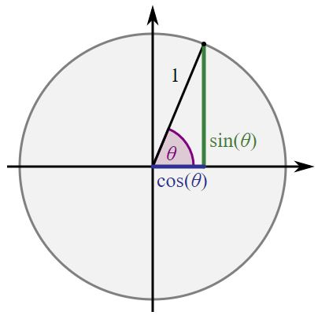So, for a given angle, like 65 degrees for example, we can form a triangle, the sin of a triangle is equal to opposite side / hypotenuse and the cos is equal to adjacent side / hypotenuse. Because of that, at 90 degrees, since the adjacent side of the triangle will be zero, cos will be zero, while sin will be equal to 1 since opposite side and hypotenuse will be equal.
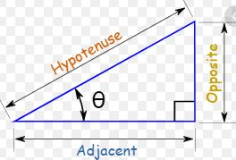Anyway, what we gotta understand from this basically is that by doing circle's X position + Math.cos(radians) * radius we get the exact x position of the the angle. If we created an arc at 200 pixels x with a radius of 50 pixels and we then put our finger at the edge of the circle and draged it around the circle 90 degrees, that would be π/2 radians, so if we wanted to find the exact x position our finger is on we could do 200 + Math.cos(π/2) * 50, to find the y position our finger is on we simple would do the same but use Math.sin() instead, so we would do 200 + Math.sin(π/2) * 50.
If in an animation, we continuously increased the radians, it would be as if we were rotating around a circle again and again, if we used sin for y and cos for x positions of our particle, then a circual movement would be made, a small one though since sin and cos return numbers between -1 and 1, anyway, let's test this out:
JavaScript Code:
let canvas = document.getElementById('canvas-021');
let c = canvas.getContext('2d');
canvas.width = 500;
canvas.height = 200;
let createParticle = function(x, y, r, cl){
this.x = x;
this.y = y;
this.r = r;
this.cl = cl;
this.velocity = 0.005;
this.radians = 0;
this.draw = function(){
c.fillStyle = this.cl;
c.beginPath();
c.arc(this.x, this.y, this.r, 0, 2 * Math.PI);
c.stroke();
c.fill();
}
this.update = function(){
this.radians += this.velocity;
this.x = Math.cos(this.radians);
this.y = Math.sin(this.radians);
let p = document.getElementById('smthinga');
p.innerHTML = `x: ${this.x}
y: ${this.y}`;
this.draw();
}
}
let particles = new Array();
for(let i = 1; i <= 1; i++){
particles.push(new createParticle(canvas.width / 2, canvas.height / 2, 10, 'red'));
}
function animate(){
c.clearRect(0, 0, canvas.width, canvas.height);
particles.forEach((particle) => {
particle.update();
});
requestAnimationFrame(animate);
}
animate();
Outcome:
The code above already creates a circular motion, its just way too small
to notice easily, but the circle does move, the radians are increasing per each
iteration, therefore, the sin and cos are changing too, if we add
these for our x, y positions we should get a circular movement, however, there are two issues we gotta
fix in order to make this visible, first, we gotta
JavaScript Code:
this.x = x + Math.cos(this.radians) * 50; this.y = y + Math.sin(this.radians) * 50;
Outcome:
Alright, now, let's add multiple particles, and give them a random starting radians angle, as well as a random distance from center.
JavaScript Code:
let canvas = document.getElementById('canvas-024'); let c = canvas.getContext('2d'); canvas.width = 500; canvas.height = 300; let createParticle = function(x, y, r, cl){ this.x = x; this.y = y; this.r = r; this.cl = cl; this.velocity = 0.05; this.radians = Math.random() * Math.PI * 2; this.distance = Math.random() * 50 + 50; this.draw = function(){ c.fillStyle = this.cl; c.beginPath(); c.arc(this.x, this.y, this.r, 0, 2 * Math.PI); c.stroke(); c.fill(); } this.update = function(){ this.radians += this.velocity; this.x = x + Math.cos(this.radians) * this.distance; this.y = y + Math.sin(this.radians) * this.distance; this.draw(); } } let particles = new Array(); function int(){ particles = []; for(let i = 1; i <= 50; i++){ particles.push(new createParticle(canvas.width / 2, canvas.height / 2, 10, 'red')); } } int(); function animate(){ c.clearRect(0, 0, canvas.width, canvas.height); particles.forEach((particle) => { particle.update(); }); requestAnimationFrame(animate); } animate();
Outcome:
Now, let's try to create a nice trail to make the animation smoother:
JavaScript Code:
function animate(){ c.fillStyle = 'rgba(255, 255, 255, 0.06)'; c.fillRect(0, 0, canvas.width, canvas.height); particles.forEach((particle) => { particle.update(); }); requestAnimationFrame(animate); }
Outcome:
This doesn't look very beautiful to me, and that's because we are using arcs, to make it better let's change arcs to lines, in order to create lines we are gona need to keep reference of our previous x,y positions so that we can draw the line from the previous x,y positions to new x,y positions:
JavaScript Code:
let cas = document.getElementById('canvas-026'); let c = canvas.getContext('2d'); canvas.width = 500; canvas.height = 300; let createParticle = function(x, y, r, cl){ this.x = x; this.y = y; this.r = r; this.cl = cl; this.velocity = 0.05; this.radians = Math.random() * Math.PI * 2; this.distance = Math.random() * 50 + 50; this.draw = function(previous){ c.strokeStyle = this.cl; c.lineWidth = this.r; c.beginPath(); c.moveTo((previous.x == x)? this.x: previous.x, (previous.y == y)? this.y: previous.y); c.lineTo(this.x, this.y); c.stroke(); c.closePath(); } this.update = function(){ let previousPoints = { x: this.x, y: this.y } this.radians += this.velocity; this.x = x + Math.cos(this.radians) * this.distance; this.y = y + Math.sin(this.radians) * this.distance; this.draw(previousPoints); } } let colors = ["#F2EBEC", "#C8C1D9", "#5D84A6", "#485159", "#F2D4AE"]; let particles = new Array(); function int(){ particles = []; for(let i = 1; i <= 50; i++){ let r = Math.random() * 3 + 1; let cl = colors[Math.floor(Math.random() * colors.length)]; particles.push(new createParticle(canvas.width / 2, canvas.height / 2, r, cl)); } } int(); function isScrolledIntoView(el) { var rect = el.getBoundingClientRect(); var elemTop = rect.top; var elemBottom = rect.bottom; // Only completely visible elements return true: var isVisible = (elemTop >= 0) && (elemBottom <= window.innerHeight); // Partially visible elements return true: //isVisible = elemTop < window.innerHeight && elemBottom >= 0; return isVisible; } function animate(){ if(isScrolledIntoView(canvas)){ c.fillStyle = 'rgba(0, 0, 0, 0.05)'; c.fillRect(0, 0, canvas.width, canvas.height); particles.forEach((particle) => { particle.update(); }); } requestAnimationFrame(animate); } animate();
Outcome:
A lot better, don't you agree? I did some other changes too, like, I randomized the radius and color to make it look better, since when the animation first starts the x and y are at the center of the circle, I made it so it checks if previous.x and y are equal to original x and y and if true I use the new x and y positions on both moveTo and lineTo, I did that in order to fix a bug, after the canvas has been drawn, even though a lot of layers of black rectangles with a transparency of 0.05 are added to cover old drawings, the color stays slightly different, I don't know why, the background was just a little brighter, it wasn't very visible but I didn't like it so that's why I prevented the lines from starting at the center.
Let's now add some interactivity so that the particles are moving with the mouse:
JavaScript Code:
let canvas = document.getElementById('canvas-027'); let c = canvas.getContext('2d'); canvas.width = 500; canvas.height = 300; let mouse = { x: Number.POSITIVE_INFINITY, y: Number.POSITIVE_INFINITY } canvas.addEventListener('mousemove', (e) => { mouse.x = e.offsetX; mouse.y = e.offsetY; }); canvas.addEventListener('mouseout', (e) => { mouse.x = Number.POSITIVE_INFINITY; mouse.y = Number.POSITIVE_INFINITY; }); let createParticle = function(x, y, r, cl){ this.x = x; this.y = y; this.r = r; this.cl = cl; this.velocity = 0.05; this.radians = Math.random() * Math.PI * 2; this.distance = Math.random() * 50 + 50; this.draw = function(previous){ c.strokeStyle = this.cl; c.lineWidth = this.r; c.beginPath(); c.moveTo((previous.x == x)? this.x: previous.x, (previous.y == y)? this.y: previous.y); c.lineTo(this.x, this.y); c.stroke(); c.closePath(); } this.update = function(){ let previousPoints = { x: this.x, y: this.y } this.radians += this.velocity; this.x = mouse.x + Math.cos(this.radians) * this.distance; this.y = mouse.y + Math.sin(this.radians) * this.distance; this.draw(previousPoints); } } let colors = ["#F2EBEC", "#C8C1D9", "#5D84A6", "#485159", "#F2D4AE"]; let particles = new Array(); function int(){ particles = []; for(let i = 1; i <= 50; i++){ let r = Math.random() * 3 + 1; let cl = colors[Math.floor(Math.random() * colors.length)]; particles.push(new createParticle(canvas.width / 2, canvas.height / 2, r, cl)); } } int(); function isScrolledIntoView(el) { var rect = el.getBoundingClientRect(); var elemTop = rect.top; var elemBottom = rect.bottom; // Only completely visible elements return true: var isVisible = (elemTop >= 0) && (elemBottom <= window.innerHeight); // Partially visible elements return true: //isVisible = elemTop < window.innerHeight && elemBottom >= 0; return isVisible; } function animate(){ if(isScrolledIntoView(canvas)){ c.fillStyle = 'rgba(0, 0, 0, 0.05)'; c.fillRect(0, 0, canvas.width, canvas.height); particles.forEach((particle) => { particle.update(); }); } requestAnimationFrame(animate); } animate();
Outcome:
So, this works fine, but it isn't very smooth, I would like to create a dragging effect, so that the particles are being dragged towards the mouse slower, lets try this:
JavaScript Code:
let canvas = document.getElementById('canvas-028'); let c = canvas.getContext('2d'); canvas.width = 500; canvas.height = 300; let mouse = { x: Number.POSITIVE_INFINITY, y: Number.POSITIVE_INFINITY } canvas.addEventListener('mousemove', (e) => { mouse.x = e.offsetX; mouse.y = e.offsetY; }); canvas.addEventListener('mouseout', (e) => { mouse.x = Number.POSITIVE_INFINITY; mouse.y = Number.POSITIVE_INFINITY; }); let createParticle = function(x, y, r, cl){ this.x = x; this.y = y; this.r = r; this.cl = cl; this.velocity = 0.05; this.radians = Math.random() * Math.PI * 2; this.distance = Math.random() * 50 + 50; this.lastMouse = {x: x, y: y}; this.draw = function(previous){ c.strokeStyle = this.cl; c.lineWidth = this.r; c.beginPath(); c.moveTo((previous.x == x)? this.x: previous.x, (previous.y == y)? this.y: previous.y); c.lineTo(this.x, this.y); c.stroke(); c.closePath(); } this.update = function(){ let previousPoints = { x: this.x, y: this.y } this.radians += this.velocity; if(mouse.x != Number.POSITIVE_INFINITY){ this.lastMouse.x += (mouse.x - this.lastMouse.x) * 0.09; this.lastMouse.y += (mouse.y - this.lastMouse.y) * 0.09; this.x = this.lastMouse.x + Math.cos(this.radians) * this.distance; this.y = this.lastMouse.y + Math.sin(this.radians) * this.distance; this.draw(previousPoints); } } } let colors = ["#F2EBEC", "#C8C1D9", "#5D84A6", "#485159", "#F2D4AE"]; let particles = new Array(); function int(){ particles = []; for(let i = 1; i <= 50; i++){ let r = Math.random() * 3 + 1; let cl = colors[Math.floor(Math.random() * colors.length)]; particles.push(new createParticle(canvas.width / 2, canvas.height / 2, r, cl)); } } int(); function isScrolledIntoView(el) { var rect = el.getBoundingClientRect(); var elemTop = rect.top; var elemBottom = rect.bottom; // Only completely visible elements return true: var isVisible = (elemTop >= 0) && (elemBottom <= window.innerHeight); // Partially visible elements return true: //isVisible = elemTop < window.innerHeight && elemBottom >= 0; return isVisible; } function animate(){ if(isScrolledIntoView(canvas)){ c.fillStyle = 'rgba(0, 0, 0, 0.05)'; c.fillRect(0, 0, canvas.width, canvas.height); particles.forEach((particle) => { particle.update(); }); } requestAnimationFrame(animate); } animate();
Outcome:
So, when mouse.x stops being POSITIV_INFINITY, if for example you move your mouse to the top left corner of the canvas, the lastMouse.x will be increased by the distance of your old mouse pisition and your new mouse positive * 0.09, then the result will be used to change the position of the circle, which means, if you moved your mouse from (50, 50) to (100, 50), then the lastMouse.x would become 50 (which was the last mouse position) + 50 (which is the distance from the new mouse position) * 0.09, this is later used for the x of the circle, so, what this basically does it that it makes x increase slowly instead of moving exactly with the mouse, and that creates a smoother effect than before.
In this section we will learn how to obtain and manipulate the pixels data of the canvas, we will learn how by providing x, y coordinates we can obtain the RGBA value of the pixel at that position, by knowing that, we will then be able to manipulate them, using ctx.getImageData() and ctx.putImageData() methods. Lastly we will also learn canvas.toDataURL() method which allows us to save a canvas as an URL that can later be used as source of an image.
The CanvasRenderingContext2D method getImageData() of the Canvas 2D API returns an ImageData object representing the underlying pixel data for a specified portion of the canvas
This method is not affected by the canva's transformation matrix. If the specified rectangle extends outside the bounds of the canvas, the pixels outside the canvas are transparent black in the returned ImageData object
The getImageData() method takes four parameters, which are the following: x, y, width, height, those parameters are used to select the area of the canvas you want, after using this method an object will be returned, let's take a look to that object:
JavaScript Code:
let canvas = document.getElementById('canvas-020'); let c = canvas.getContext('2d'); let imageData = c.getImageData(0, 0, canvas.width, canvas.height); console.dir(imageData);
Outcome:
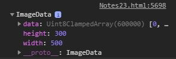There are two errors that may appear when you call this method, one is IndexSizeError which will be thrown if either width or height are zero, and the second error is SecurityError. The canvas contains or may contain pixels which were loaded from an origin other than the one from which the document itself was loaded. To avoid SecurityError being thrown in this situation, configure CORS to allow the source image to be used in this way.
Anyway, let's continue now and learn what the data property is. The data property is a Unit8ClampedArray representing a one-dimensional array containing the data in the RGBA order, with integer values between 0 and 255.
The data property returns a Uint8ClampedArray which can be accessed to look at the raw pixel data. Each pixel is represented by four one-byte values (red, green, blue and alpha, in that order, that is, "RGBA" format). Each color component is represented by an interger between 0 and 255. Each component is assigned a consecutive index within the array, with the top left pixel's red component being at index 0 within the array. Pixels then proceed from left to right, then downward, throughout the array.
So, let me explain the pixels array with simplier words now, the first four elements of the array are the RGBA values of the first pixel at the top left of the canvas, the first element is red, the second element is green, the third element is blue and the fourth element is alpha, so how could we find a specific pixel in the canvas inside this array? There is a formula we can use, if each pixel only was one element each, then x + y * width would return the pixel at the specified x and y position, the second pixel for example would be at (1, 0), in a canvas with width 100pixels, if we did 2 + 0 * 100 we would get 2, however, since each pixel takes four elements we should multiple this by 4, so if I wanted to choose the first pixel, I would do (0 + 0 * 100) *4, which would give me 0, which is indeed the first element of the first pixel, if I wanted to get the second pixel I would do (1 + 0 * 100) *4 which would give me 4, which is indeed the first element of the second pixel. What you need to remember is the following simple formula and you will be able to find the pixel you want in the pixels array: (x + y * canvas.width) * 4
So, if you wanted to only choose the red velue of the pixels you could use the formula I wrote above, if you however wanted to select the green value you could use this one instead: (x + y * canvas.width) * 4 + 1, or if you wanted to select the blue value you could use this one: (x + y * canvas.width) * 4 + 2, and lastly, to select the alpha value you could use this one: (x + y * canvas.width) * 4 + 3.
Here is a video that really helped me understand the pixels array:
So, now, let's create a simple function that gets the RGBA values of a specified pixel:
JavaScript Code:
function getColorIndices(x, y, width){ let red = (x + y * width) * 4; return [red, red + 1, red + 2, red + 3]; }; let colorIndices = getColorIndices(1, 0, 100); let [redIndex, greenIndex, blueIndex, alphaIndex] = colorIndices; // redIndex == 4, greenIndex == 5, blueIndex == 6, alphaIndex == 7
Let's create a color picker project for fun:
HTML Code:
<table id="colorpicker-project"> <tr> <th>Source</th> <th>Hovered color</th> <th>Selected Color</th> </tr> <tr> <td><canvas id="canvas-colorpicker"></canvas></td> <td><div id="hoveredcolor"></div></td> <td><div id="selectedcolor"></div></td> </tr> </table>
CSS Code:
#colorpicker-project{ border: 3px solid lightcyan; border-collapse: collapse; margin: auto; background-color: black; color: lightcyan; } #colorpicker-project th, #colorpicker-project td{ border: 2px solid lightcyan; padding: 5px; } #selectedcolor, #hoveredcolor{ height: 150px; width: 100%; }
JavaScript Code:
let canvas = document.getElementById('canvas-colorpicker'); let c = canvas.getContext('2d'); let hoveredColor = document.getElementById('hoveredcolor'); let selectedColor = document.getElementById('selectedcolor'); let gradient = c.createLinearGradient(0, 0, canvas.width, canvas.height); gradient.addColorStop(0, 'red'); gradient.addColorStop(0.5, 'green'); gradient.addColorStop(1, 'blue'); c.fillStyle = gradient; c.fillRect(0, 0, canvas.width, canvas.height); let mouse = { x: undefined, y: undefined } function colorPicker(event, target){ mouse.x = event.offsetX; mouse.y = event.offsetY; let imageData = c.getImageData(0, 0, canvas.width, canvas.height); function getColorIndices(x, y, width){ let red = (x + y * width) * 4; return [red, red + 1, red + 2, red + 3]; } let colorIndices = getColorIndices(mouse.x, mouse.y, canvas.width); let RGBA = colorIndices.map((x) => { return imageData.data[x]; }); target.style.backgroundColor = `rgba(${RGBA})`; } canvas.addEventListener('mousemove', (e) => { colorPicker(e, hoveredColor); }); canvas.addEventListener('click', (e) => { colorPicker(e, selectedColor); });
Outcome:
| Source | Hovered color | Selected Color |
|---|---|---|
Getting the opacity is a little different however, the opacity is stored in values between 0 and 255, if for example the first pixel has the opacity of 0.5, then imageData.data[3] would return 0.5 * 255, in order to convert that number back to the original float number of the opacity you should devide the given number by 255, like this:
JavaScript Code:
let canvas = document.querySelector('#canvass1'); let c = canvas.getContext('2d'); canvas.width = 500; canvas.height = 300; c.fillStyle = 'red'; c.globalAlpha = '0.5'; c.fillRect(0, 0, canvas.width, canvas.height); let imageData = c.getImageData(0, 0, canvas.width, canvas.height); let data = imageData.data; let opacity = data[3] / 255; document.write(`The first pixel of the canvas has an opacity of ${opacity}`);
Outcome:
You can use the putImageData() method to paint pixel data into a context, it's syntax looks like this: ctx.putImageDate(myImageData, dx, dy);
The dx and dy parameters indicate the device coordinates within the context which to paint the top left corner of the pixel data you wish to draw.
For example, to paint the entire image represented by myImageData to the top left corner of the context, you can do the following: ctx.putImageData(myImageData, 0, 0);
HTML Code:
#canvas-project007{ display: grid; grid-template-areas: 'canvas' 'form'; justify-content: space-evenly; margin: auto; width: fit-content; } #canvas-0002{ border: 3px solid black; grid-area: canvas; } #canvas-project007 form{ grid-area: form; display: flex; width: 100%; justify-content: space-evenly; }
CSS Code:
<div id="canvas-project007"> <canvas id="canvas-0002" style="border: 3px solid black; display: block; margin: auto;"></canvas> <form> <input type="radio" name="type" value="original" checked="true"> Original <input type="radio" name="type" value="Grayscale"> Grayscale <input type="radio" name="type" value="Inverted"> Inverted </form> </div>
JavaScript Code:
let canvas = document.getElementById('canvas-0002'); let c = canvas.getContext('2d'); let inputs = document.querySelectorAll('#canvas-project007 input'); let gradient = c.createLinearGradient(0, 0, canvas.width, canvas.height); gradient.addColorStop(0, 'red'); gradient.addColorStop(0.3, 'pink'); gradient.addColorStop(0.5, 'green'); gradient.addColorStop(0.7, 'yellow'); gradient.addColorStop(1, 'blue'); let img = new Image(); img.src = ../images/ω8.png'; function original(){ let aspectRatio = img.naturalWidth / img.naturalHeight; canvas.height = canvas.width / aspectRatio; c.drawImage(img, 0, 0, canvas.width, canvas.height); } img.addEventListener('load', (e) => { original(); }); function grayscale(){ original(); let imageData = c.getImageData(0, 0, canvas.width, canvas.height); let data = imageData.data; for(let i = 0; i < data.length; i+=4){ let avg = (data[i] + data[i + 1] + data[i + 2]) / 3; data[i] = avg; data[i + 1] = avg; data[i + 2] = avg; } c.putImageData(imageData, 0, 0); } function inverted(){ original(); let imageData = c.getImageData(0, 0, canvas.width, canvas.height); let data = imageData.data; for(let i = 0; i < data.length; i += 4){ data[i] = 255 - data[i]; data[i + 1] = 255 - data[i + 1]; data[i + 2] = 255 - data[i + 2] } c.putImageData(imageData, 0, 0); } inputs.forEach((input) => { input.addEventListener('change', (e) => { switch(e.target.value){ case "Grayscale": return grayscale(); break; case "Inverted": return inverted(); break; default: return original(); } }); });
Outcome:
In the previous section I created a project in which some particles are making a circual move around your mouse with a trail effect, but because I used fillRect with an opacity of 0.5 to make that trail effect the background of the canvas lost it's transparency, something that's bad since I wanted to later to make the canvas take the whole page with a fixed position and a transparent background, to fix that, I am gonna use getImageData(), to get the pixels data before each animation iteration, then I will multiple the opacity of all pixels by 0.9, meaning that pixels that are already transparent will stay transparent while pixels that wer visible will become more transparent then I will simple use clearRect() to clear the canvas and putImageData() to draw the particles with a lower transparency, then the next animation iteration will happen and like that the trail effect will be created:
JavaScript:
function animate(){ if(isScrolledIntoView(canvas)){ let imageData = c.getImageData(0, 0, canvas.width, canvas.height); let data = imageData.data; for(i = 3; i < data.length; i += 4){ data[i] = data[i] * 0.9 } c.clearRect(0, 0, canvas.width, canvas.height); c.putImageData(imageData, 0, 0); particles.forEach((particle) => { particle.update(); }); } requestAnimationFrame(animate); } animate();
Outcome:
The HTMLCanvasElement provides a toDataURL() method, which is useful when saving images. It returns a data URL containing a representation of the image in the format specified by the type parameter (defaults to PNG). The returned image is a resolution of 9 dpi.
The syntax looks like this: canvas.toDataURL('image/png', quality), of course you can use other formats such as jpg, jpeg, etc, and also, the second parameter is optional, you don't need to add it, you can provide a quality in a range from 0 to 1, with one being the best quality and with - almost not recognizable but small in file size.
JavaScript Code:
let canvas = document.getElementById('canvas-idka'); let c = canvas.getContext('2d'); c.fillStyle = 'lightcoral'; c.fillRect(0, 0, canvas.width, canvas.height); let colors = ["yellow", "brown", "green", "orange", "pink", 'purple']; for(let i = 0; i<100; i++){ let r = Math.random() * 3 + 2; let x = Math.random() * (canvas.width - r * 2) + r; let y = Math.random() * (canvas.height - r * 2) + r; let cl = colors[Math.floor(Math.random() * colors.length)]; c.fillStyle = cl; c.beginPath(); c.arc(x, y, r, 0, Math.PI * 2); c.stroke(); c.fill(); } let url = canvas.toDataURL('image/jpeg', 1); let img = document.getElementById('image-container'); img.src = url;
Outcome:
The reason the image has a border and is center is because I have styled all the images I add to be like that since it's time consuming to add the styles on each seperately.
In this section we will learn how to draw sine waves and edit them, learning the theory behind them can be very useful, because sine waves can be used in many ways. They are very beautiful to use for dynamic backgrounds and stuff, that make your website look better than simple static drawings.
To create the waves we are going to use the Math.sin() method, I explaine how it works in the previous section, when you want something to go forth and back, or up and down the Math.sin() method is usually what you are looking for, since it returns numbers between -1 and 1, we are going to create a loop to draw the waves pixel by pixel and use Math.sin() to change the y value continuously, let's try this:
JavaScript Code:
let canvas = document.getElementById('canvas-0003'); let c = canvas.getContext('2d'); canvas.width = 500; canvas.height = 300; let wave = { y: canvas.height / 2 } c.beginPath(); c.moveTo(0, wave.y); for(let i = 0; i <= canvas.width; i++){ c.lineTo(i, wave.y + Math.sin(i)); } c.stroke();
Outcome:
Alright, we did make some really small waves, but I would like them more if they were a little bigger, to do that we will add an aplitude to our waves, right now, Math.sin() returns numbers between -1 and 1, if I were to multiple this by 50 for example it would return numbers between -50 and 50, lets try this:
JavaScript Code:
let canvas = document.getElementById('canvas-0004'); let c = canvas.getContext('2d'); canvas.width = 500; canvas.height = 300; let wave = { y: canvas.height / 2, aplitude: 50 } c.beginPath(); c.moveTo(0, wave.y); for(let i = 0; i <= canvas.width; i++){ c.lineTo(i, wave.y + Math.sin(i) * wave.aplitude); } c.stroke();
Outcome:
That's a little better, but it's still a little ugly, the length of the waves is way too small, to dix that we can multiple i inside Math.(sin) with a demical number, right now we are getting a small length because the numbers between -50 and 50 are going up and down way too fast, if instead of increasing i by 1 for each loop I were increasing it with 0.05 for example, the waves would get bigger, so all I have to do is multiple i with 0.05.
JavaScript Code:
let canvas = document.getElementById('canvas-0005'); let c = canvas.getContext('2d'); canvas.width = 500; canvas.height = 300; let wave = { y: canvas.height / 2, aplitude: 50, length: 0.05 } c.beginPath(); c.moveTo(0, wave.y); for(let i = 0; i <= canvas.width; i++){ c.lineTo(i, wave.y + Math.sin(i * wave.length) * wave.aplitude); } c.stroke();
Outcome:
Now, before I continue I would like to add a package to our code that allows us to change the values of the variables and see our animation change on screen without having to edit the code and save, this will save us a lot of time since we won't have to just try out random values again and again till we find the ones we like, and also it's just cool, to be able to manipulate the wave, it also will help us better understand how the wave works.
The package I will use is called dat.GUI and I have wrote about everything you need to know to install it in this page, you will need to learn how to use the terminal, how to use NPM, then how to use parcel and then I have also wrote instructions abou thow to install and use dat.gui.
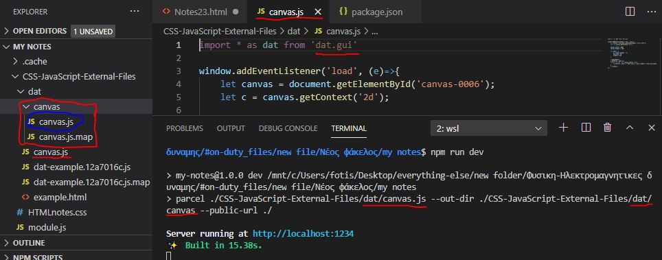I know this may seem a little complicated, so let me explain what I did, I created an external canvas.js file which I will from now on use to draw all my canvas elements, and I bundled it with parcel, so that data.gui package works. From now on, whenever I update canvas.js the canvas.js inside canvas folder will also be updated automatically. I will be using the bundled file inside the page you are currently viewing, after I'm done with all my projects, I will use parcel build to minimize the bundled file so it takes less space, I then remove the original canvas.js file, or keep it somewhere for later anyway, and I will only need to keep the bundled canvas.js file.
[canvas.js] JavaScript Code:
import * as dat from 'dat.gui' let canvas = document.getElementById('canvas-0006'); let c = canvas.getContext('2d'); canvas.width = 500; canvas.height = 300; let gui; let wave = { y: canvas.height / 2, aplitude: 50, length: 0.05 } canvas.addEventListener('click', (e) =>{ let div = document.querySelector('.close-button'); if(div == null){ gui = new dat.GUI(); let wave_folder = gui.addFolder('wave'); wave_folder.add(wave, 'y', 0, canvas.height); wave_folder.add(wave, 'aplitude', -100, 100); wave_folder.add(wave, 'length', -0.05, 0.05); } else { div.remove(); let folders = document.querySelector('.dg ul'); if(folders != null){ folders.remove(); } } }); function isScrolledIntoView(el) { var rect = el.getBoundingClientRect(); var elemTop = rect.top; var elemBottom = rect.bottom; var isVisible = (elemTop >= 0) && (elemBottom <= window.innerHeight); return isVisible; } function animate(){ if(isScrolledIntoView(canvas)){ c.beginPath(); c.moveTo(0, wave.y); for(let i = 0; i <= canvas.width; i++){ c.lineTo(i, wave.y + Math.sin(i * wave.length) * wave.aplitude); } c.stroke(); } requestAnimationFrame(animate); } animate();
Outcome:
If you click the canvas and play with the variables you will see the waves change, it will only work if the canvas is scrolled into view and I do that for every animation I make because I have built a lot of animations and if all of them worked together the page would be very laggy. Anyway, there is a problem, it keeps on drawing over the previous frames, to fix that, I'm gonna use getImageData() and putImageData(), I could just use clearRect() but I want to add a trail effect and keep a transparent background so that the canvas can later be used easily anywhere without a problem:
[canvas.js] JavaScript Code:
import * as dat from 'dat.gui' let canvas = document.getElementById('canvas-0007'); let c = canvas.getContext('2d'); canvas.width = 500; canvas.height = 300; let gui; let wave = { y: canvas.height / 2, aplitude: 50, length: 0.05 } canvas.addEventListener('click', (e) =>{ let div = document.querySelector('.close-button'); if(div == null){ gui = new dat.GUI(); let wave_folder = gui.addFolder('wave'); wave_folder.add(wave, 'y', 0, canvas.height); wave_folder.add(wave, 'aplitude', -100, 100); wave_folder.add(wave, 'length', -0.05, 0.05); } else { div.remove(); let folders = document.querySelector('.dg ul'); if(folders != null){ folders.remove(); } } }); function isScrolledIntoView(el) { var rect = el.getBoundingClientRect(); var elemTop = rect.top; var elemBottom = rect.bottom; var isVisible = (elemTop >= 0) && (elemBottom <= window.innerHeight); return isVisible; } function animate(){ if(isScrolledIntoView(canvas)){ let imageData = c.getImageData(0, 0, canvas.width, canvas.height); let data = imageData.data; for(let i = 3; i < data.length; i += 4){ data[i] = data[i] * 0.9 } c.clearRect(0, 0, canvas.width, canvas.height); c.putImageData(imageData, 0, 0); c.beginPath(); c.moveTo(0, wave.y); for(let i = 0; i <= canvas.width; i++){ c.lineTo(i, wave.y + Math.sin(i * wave.length) * wave.aplitude); } c.stroke(); } requestAnimationFrame(animate); } animate();
Outcome:
Let's try to make the wave move now, by adding a frequency variable. Frequency in a number of wave cycles that pass a fixed point over time.
To create the moving effect we will be adding an increasing number inside our Math.sin() method, this increment number will be increased by the frequency every time an animation frame is over, thus creating an illusion of moving. Why does this create the illusion of moving? From what I understand, this increment number changes the starting point of our waves, since it's a static number that does not increase throughout the for loop, the number inside Math.sin() method will be increased the same for all loops in an animation frame, thus moving all the pixels to slightly different positions than in the previous animation frame. The waves will always start from our y point since only the lineTo() method is inside our loop and is effected by the frequency, as the increment number is increasing the wave's y seems to be going up and down, in reality, our pencil will always start from y, what changes is that y coordinate that the first line is drawn to, it's because, the y has changed from the previous animation frame just a little, either has increased or decreased, depened on Math.sin(), since it gives a number between our aplutide and -aplitude. The increment number has been added to all of the lineTo() methods that are called throughout the loop, and since the Math.sin() method gives us a value between aplitude and -aplitude if the first y is increased that means the max/min aplitude will be reached faster, meaning that since the first wave will end faster the rest of the waves will also seem to have moved a little to the left, since they will start faster their circle than they did in the previous animation frame, let's try this out:
[canvas.js] JavaScript Code:
import * as dat from 'dat.gui' let canvas = document.getElementById('canvas-0008'); let c = canvas.getContext('2d'); canvas.width = 500; canvas.height = 300; let gui; let wave = { y: canvas.height / 2, aplitude: 50, length: 0.05, frequency: 0.01, } canvas.addEventListener('click', (e) =>{ let div = document.querySelector('.close-button'); if(div == null){ gui = new dat.GUI(); let wave_folder = gui.addFolder('wave'); wave_folder.add(wave, 'y', 0, canvas.height); wave_folder.add(wave, 'aplitude', -100, 100); wave_folder.add(wave, 'length', -0.05, 0.05); wave_folder.add(wave, 'frequency', -1, 1); } else { div.remove(); let folders = document.querySelector('.dg ul'); if(folders != null){ folders.remove(); } } }); function isScrolledIntoView(el) { var rect = el.getBoundingClientRect(); var elemTop = rect.top; var elemBottom = rect.bottom; var isVisible = (elemTop >= 0) && (elemBottom <= window.innerHeight); return isVisible; } let increment = wave.frequency; function animate(){ if(isScrolledIntoView(canvas)){ let imageData = c.getImageData(0, 0, canvas.width, canvas.height); let data = imageData.data; for(let i = 3; i < data.length; i += 4){ data[i] = data[i] * 0.9; } c.clearRect(0, 0, canvas.width, canvas.height); c.putImageData(imageData, 0, 0); c.beginPath(); c.moveTo(0, wave.y); for(let i = 0; i <= canvas.width; i++){ c.lineTo(i, wave.y + Math.sin(i * wave.length + increment) * wave.aplitude); } c.stroke(); increment += wave.frequency; } requestAnimationFrame(animate); } animate();
Outcome:
To make it a little better lets make the aplitude go up and down, to do this we simple can multiple aplitude with Math.sin(increment), it doesn't have to be increment, any increasing number would do, but since we have it ready we will use this one. Also, I want to change the starting length a little to make it look better, you can always just eidt it back by opening the variable changer, which you can do by clicking the canvas.
[canvas.js] JavaScript Code:
import * as dat from 'dat.gui' let canvas = document.getElementById('canvas-0009'); let c = canvas.getContext('2d'); canvas.width = 500; canvas.height = 300; let gui; let wave = { y: canvas.height / 2, aplitude: 50, length: 0.010, frequency: 0.01, } canvas.addEventListener('click', (e) =>{ let div = document.querySelector('.close-button'); if(div == null){ gui = new dat.GUI(); let wave_folder = gui.addFolder('wave'); wave_folder.add(wave, 'y', 0, canvas.height); wave_folder.add(wave, 'aplitude', -100, 100); wave_folder.add(wave, 'length', -0.05, 0.05); wave_folder.add(wave, 'frequency', -1, 1); } else { div.remove(); let folders = document.querySelector('.dg ul'); if(folders != null){ folders.remove(); } } }); function isScrolledIntoView(el) { var rect = el.getBoundingClientRect(); var elemTop = rect.top; var elemBottom = rect.bottom; var isVisible = (elemTop >= 0) && (elemBottom <= window.innerHeight); return isVisible; } let increment = wave.frequency; function animate(){ if(isScrolledIntoView(canvas)){ let imageData = c.getImageData(0, 0, canvas.width, canvas.height); let data = imageData.data; for(let i = 3; i < data.length; i += 4){ data[i] = data[i] * 0.9; } c.clearRect(0, 0, canvas.width, canvas.height); c.putImageData(imageData, 0, 0); c.beginPath(); c.moveTo(0, wave.y); for(let i = 0; i <= canvas.width; i++){ c.lineTo(i, wave.y + Math.sin(i * wave.length + increment) * wave.aplitude * Math.sin(increment)); } c.stroke(); increment += wave.frequency; } requestAnimationFrame(animate); } animate();
Outcome:
Let's now add stroke color to our
>wave and make it editable
from our variable changer:
[canvas.js] JavaScript Code: let canvas = document.getElementById('canvas-00010');
let c = canvas.getContext('2d');
canvas.width = 500;
canvas.height = 300;
let gui;
let wave = {
y: canvas.height / 2,
aplitude: 50,
length: 0.01,
frequency: 0.03,
}
let stroke = {
h: 0,
s: 50,
l: 50
}
canvas.addEventListener('click', (e) =>{
let div = document.querySelector('.close-button');
if(div == null){
gui = new dat.GUI();
let wave_folder = gui.addFolder('wave');
wave_folder.add(wave, 'y', 0, canvas.height);
wave_folder.add(wave, 'aplitude', -100, 100);
wave_folder.add(wave, 'length', -0.05, 0.05);
wave_folder.add(wave, 'frequency', -1, 1);
wave_folder.open();
let stroke_folder = gui.addFolder('stroke');
stroke_folder.add(stroke, 'h', 0, 360);
stroke_folder.add(stroke, 's', 0, 100);
stroke_folder.add(stroke, 'l', 0, 100);
stroke_folder.open();
} else {
div.remove();
let folders = document.querySelector('.dg ul');
if(folders != null){
folders.remove();
}
}
});
function isScrolledIntoView(el) {
var rect = el.getBoundingClientRect();
var elemTop = rect.top;
var elemBottom = rect.bottom;
var isVisible = (elemTop >= 0) && (elemBottom <= window.innerHeight);
return isVisible;
}
let increment = wave.frequency;
function animate(){
if(isScrolledIntoView(canvas)){
let imageData = c.getImageData(0, 0, canvas.width, canvas.height);
let data = imageData.data;
for(let i = 3; i < data.length; i += 4){
data[i] = data[i] * 0.9;
}
c.clearRect(0, 0, canvas.width, canvas.height);
c.putImageData(imageData, 0, 0);
c.beginPath();
c.moveTo(0, wave.y);
for(let i = 0; i <= canvas.width; i++){
c.lineTo(i, wave.y + Math.sin(i * wave.length + increment) * wave.aplitude * Math.sin(increment));
}
c.strokeStyle = `hsl(${stroke.h}, ${stroke.s}%, ${stroke.l}%)`;
c.stroke();
increment += wave.frequency;
}
requestAnimationFrame(animate);
}
animate(); Outcome: I also made some other changes, like, I made the frequency faster and I also
made it so the folders automatically open after you click the canvas Alright, last thing I'm gonna do is make it change color continuously,
for example, if the h is 360 I want it to change the h value
from 360 to 0, then from 0 to 360 and so on, to do that
I can simple write strokeStyle = `hsl(${stroke.h * Math.sin(increment)}, ...`
however, that would mean negative numbers would also be looped through,
to fix that, I would use the Math.abs() method, like this: strokeStyle = `hsl(${Math.abs(stroke.h * Math.sin(increment)), ...` Also, there is a problem I would like to fix, if you look closely you will notice
that at the left edge there is a visible line which before
wasn't very visible but now with color it is. As I said before, the moveTo()
method is not inside the for loop, meaning that the waves will always
start from y, its the lineTo() values that change. To fix that
I will simple make the moveTo() method go up and down as well,
by writing moveTo(0, wave.y + Math.sin(wave.length + increment) * wave.aplitude * Math.sin(increment));.
This will change the y for every animation frame, just like
it does for the lineTo() methods inside the for loop.
[canvas.js] JavaScript Code: import * as dat from 'dat.gui'
let canvas = document.getElementById('canvas-00011');
let c = canvas.getContext('2d');
canvas.width = 500;
canvas.height = 300;
canvas.style.backgroundColor = 'black';
let gui;
let wave = {
y: canvas.height / 2,
aplitude: 50,
length: 0.01,
frequency: 0.02,
}
let stroke = {
h: 360,
s: 50,
l: 50
}
canvas.addEventListener('click', (e) =>{
let div = document.querySelector('.close-button');
if(div == null){
gui = new dat.GUI();
let wave_folder = gui.addFolder('wave');
wave_folder.add(wave, 'y', 0, canvas.height);
wave_folder.add(wave, 'aplitude', -100, 100);
wave_folder.add(wave, 'length', -0.05, 0.05);
wave_folder.add(wave, 'frequency', -1, 1);
wave_folder.open();
let stroke_folder = gui.addFolder('stroke');
stroke_folder.add(stroke, 'h', 0, 360);
stroke_folder.add(stroke, 's', 0, 100);
stroke_folder.add(stroke, 'l', 0, 100);
stroke_folder.open();
} else {
div.remove();
let folders = document.querySelector('.dg ul');
if(folders != null){
folders.remove();
}
}
});
function isScrolledIntoView(el) {
var rect = el.getBoundingClientRect();
var elemTop = rect.top;
var elemBottom = rect.bottom;
var isVisible = (elemTop >= 0) && (elemBottom <= window.innerHeight);
return isVisible;
}
let increment = wave.frequency;
function animate(){
if(isScrolledIntoView(canvas)){
let imageData = c.getImageData(0, 0, canvas.width, canvas.height);
let data = imageData.data;
for(let i = 3; i < data.length; i += 4){
data[i] = data[i] * 0.95;
}
c.clearRect(0, 0, canvas.width, canvas.height);
c.putImageData(imageData, 0, 0);
c.beginPath();
c.moveTo(0, wave.y + Math.sin(wave.length + increment) * wave.aplitude * Math.sin(increment));
for(let i = 0; i <= canvas.width; i++){
c.lineTo(i, wave.y + Math.sin(i * wave.length + increment) * wave.aplitude * Math.sin(increment));
}
c.strokeStyle = `hsl(${Math.abs(stroke.h * Math.sin(increment))}, ${stroke.s}%, ${stroke.l}%)`;
c.stroke();
increment += wave.frequency;
}
requestAnimationFrame(animate);
}
animate();
} Outcome: As you can see I made some changes, I made the background black,
made the trail bigger and the frequency slower, I also
made the changes mentioned before. Here is a video that helped me a lot, I think the final project I made
is a little better because of some fixes I made and improvements, but the video
definetely explains stuff better than I do:
In this section I'm going to create a moving snake that moves randomly on the canvas, it however will not move completely randomly, since if it did then it would teleport around the screen, the randomness is going to be kind of controlled, meaning the values will be related to each other and I will use a package made by Chris called Perlin Noise.
So, what exactly is Perlin Noise? Just like Math.random() it is a function that returns a number between 0 and 1, however, the difference is that it returns those numbers in a specific sequence. This is not a built in function, you have to write it on your own, however, it is fairly complex to make it, since it needs a lot of math, and for that reason we are going to use a package.
This package I'm gonna use is fairly simple, you just call the function with a number as a parameter and it returns a number between 0 and 1, for example, I could write noise(1) or noise(2), however, the number that you pass does matter, if you want to continiously get random values that are relative to one another so that the randomness is controlled and the ball is not teleporting around the screen then the values you put inside the function should be near one another, for example, if noise(3) returned 0.3 then noise(3.2) could return 0.35 or 0.25, if you put a number of a bigger distance from the previous one used then the number that would be returned would probably have a bigger distance from the previous number returned, which could make the ball teleport around.
Alright, so, first of all, let's install it using NPM:
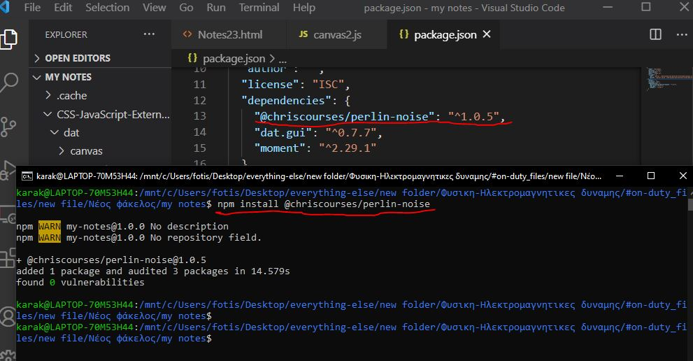Like in the previous section I will also need to use an external bundled JavaScript file, to bundle the JavaScript file I will use parcel.
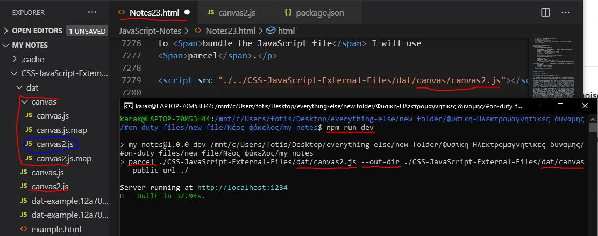From now on I will be writing my code in canvas2.js and parcel will automatically update bundled canvas2.js for me, let's create a simple code now:
JavaScript Code:
const { noise } = require('@chriscourses/perlin-noise') let canvas = document.querySelector('#canvvaas1'); let c = canvas.getContext('2d'); canvas.width = 500; canvas.height = 300; let ball = class{ constructor(x, y, r, cl){ this.x = x; this.y = y; this.r = r; this.cl = cl; } draw(){ c.fillStyle = this.cl; c.beginPath(); c.arc(this.x, this.y, this.r, 0, 2 * Math.PI); c.stroke(); c.fill(); } update(){ this.y = noise(increment) * (canvas.height - 2 * this.r) + this.r; this.draw(); } } let particle1 = new ball(canvas.width / 2, canvas.height / 2, 20, 'red'); function isScrolledIntoView(el) { var rect = el.getBoundingClientRect(); var elemTop = rect.top; var elemBottom = rect.bottom; var isVisible = (elemTop >= 0) && (elemBottom <= window.innerHeight); return isVisible; } let increment = 0; let animate = function(){ if(isScrolledIntoView(canvas)){ c.clearRect(0, 0, canvas.width, canvas.height); particle1.update(); increment += 0.01; } requestAnimationFrame(animate); } animate();
Outcome:
So, in every animation loop I increase increment variable by 0.01, which then is used to set the new y coordinates to this: noise(increment) * (canvas.height - 2 * this.r) + this.r, so, noise(increment) will return a number between 0 and 1 that is relative to the previous number it returned, and then it is multipled by (canvas.height - 2 * this.r) + this.r, I have actually used the exact same line of code before, with Math.random(), it basically sets the range of numbers it can return to not be less than 0 or more than the canvas's width. Lets now try to do the same for the x coordinates:
JavaScript Code:
update(){ this.x = noise(increment) * (canvas.width - 2 * this.r) + this.r; this.y = noise(increment) * (canvas.height - 2 * this.r) + this.r; this.draw(); }
Outcome:
As you can see, it does work, however, the ball moves from the top left corner towards the bottom right corner which isn't what we want, the reason this happens is because we use the same increment number in noise() function, to fix that, we can simple add an offset, we could for example write x = noise(increment - 20) and that would fix the problem.
JavaScript Code:
update(){ this.x = noise(increment - 20) * (canvas.width - 2 * this.r) + this.r; this.y = noise(increment) * (canvas.height - 2 * this.r) + this.r; this.draw(); }
Outcome:
Now, I want to create more balls, and each ball should have a slightly different offset for y and x so that one is behind each other like a snake. To do that, we are gonna add an offset property to the ball object and to give a different offset to each ball we will simple use a for loop to create the balls as we usually do and we will pass i as the parameter of the offset, since i however will be increased by 1 for each ball, which is a big offset and would create a big space between the balls, we are gonna multiply i with 0.02 to give the balls smaller offsets. Those offsets will be used inside the noise() function, like this: noise(increment - offset), for x property however we are also gonna keep the -20 offset so that the balls aren't moving from the top left corner towards the bottom right corner like before.
JavaScript Code:
const { noise } = require('@chriscourses/perlin-noise') let canvas = document.querySelector('#canvvaas4'); let c = canvas.getContext('2d'); canvas.width = 500; canvas.height = 300; let ball = class{ constructor(x, y, r, cl, offset){ this.x = x; this.y = y; this.r = r; this.cl = cl; this.offset = offset; } draw(){ c.fillStyle = this.cl; c.beginPath(); c.arc(this.x, this.y, this.r, 0, 2 * Math.PI); c.stroke(); c.fill(); } update(){ this.x = noise(increment - this.offset - 20) * (canvas.width - 2 * this.r) + this.r; this.y = noise(increment - this.offset) * (canvas.height - 2 * this.r) + this.r; this.draw(); } } let particles = new Array(); let int = function(){ particles = []; for(let i = 0; i < 50; i++){ let r = 10; let x = -999; let y = -999; let cl = 'red'; particles.push(new ball(x, y, r, cl, i * 0.02)); } } int(); function isScrolledIntoView(el) { var rect = el.getBoundingClientRect(); var elemTop = rect.top; var elemBottom = rect.bottom; var isVisible = (elemTop >= 0) && (elemBottom <= window.innerHeight); return isVisible; } let increment = 0; let animate = function(){ if(isScrolledIntoView(canvas)){ c.clearRect(0, 0, canvas.width, canvas.height); particles.forEach((particle) =>{ particle.update(); }); increment += 0.01; } requestAnimationFrame(animate); } animate();
Outcome:
This works really nice, all that's left now is to add some cool effects, you can play around with it to see what you can create, I will use some simple effects that I have used in previous projects just to make it a little more interesting.
JavaScript Code:
const { noise } = require('@chriscourses/perlin-noise') let canvas = document.querySelector('#canvvaas5'); let c = canvas.getContext('2d'); canvas.width = 500; canvas.height = 300; let ball = class{ constructor(x, y, r, cl, cl2, offset){ this.x = x; this.y = y; this.r = r; this.innerColor = cl; this.outerColor = cl2; this.offset = offset; this.previousCoords = {x: this.x, y: this.y}; } draw(){ c.lineCap = 'round'; c.lineJoin = 'round'; c.strokeStyle = this.outerColor; c.lineWidth = this.r; c.beginPath(); c.moveTo(this.previousCoords.x, this.previousCoords.y); c.lineTo(this.x, this.y); c.stroke(); c.fill(); c.lineWidth = this.r - 5; c.strokeStyle = this.innerColor; c.beginPath(); c.moveTo(this.previousCoords.x, this.previousCoords.y); c.lineTo(this.x, this.y); c.fill(); c.stroke(); } update(){ if(this.x == undefined){ this.previousCoords.x = noise(increment - this.offset - 20) * (canvas.width - 2 * this.r) + this.r; this.previousCoords.y = noise(increment - this.offset) * (canvas.height - 2 * this.r) + this.r; } this.x = noise(increment - this.offset - 20) * (canvas.width - 2 * this.r) + this.r; this.y = noise(increment - this.offset) * (canvas.height - 2 * this.r) + this.r; this.draw(); this.previousCoords.x = this.x; this.previousCoords.y = this.y; } } let particles = new Array(); let particles2 = new Array(); let colors = ["#F2EBEC", "#C8C1D9", "#5D84A6", "#485159", "#F2D4AE"]; let int = function(){ particles = []; particles2 = []; for(let i = 0; i < 30; i++){ let r = 23; let x = undefined; let y = undefined; let innerColor = colors[Math.floor(Math.random() * colors.length)]; particles.push(new ball(x, y, r, innerColor, 'red', i * 0.03)); particles2.push(new ball(x, y, r, innerColor, 'blue', i * 0.03 + 300)); } } int(); function isScrolledIntoView(el) { var rect = el.getBoundingClientRect(); var elemTop = rect.top; var elemBottom = rect.bottom; var isVisible = (elemTop >= 0) && (elemBottom <= window.innerHeight); return isVisible; } let increment = 0; let animate = function(){ if(isScrolledIntoView(canvas)){ let imageData = c.getImageData(0, 0, canvas.width, canvas.height); let data = imageData.data; for(let i = 3; i < data.length; i += 4){ data[i] = data[i] * 0.7; if(data[i] / 255 < 0.1){ data[i] = data[i] * 0; } } c.clearRect(0, 0, canvas.width, canvas.height); c.putImageData(imageData, 0, 0); particles.forEach((particle) =>{ particle.update(); }); particles2.forEach((particle) =>{ particle.update(); }); increment += 0.01; } requestAnimationFrame(animate); } animate();
Outcome:
This tutorial helped me make this section, I recommend you watch it if you need extra help: